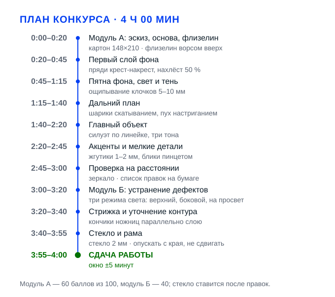
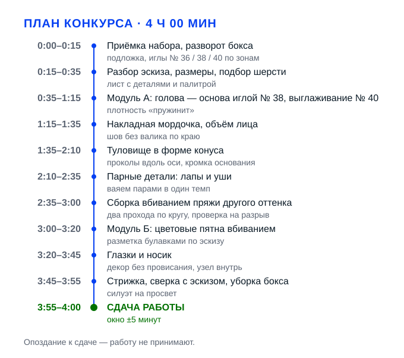
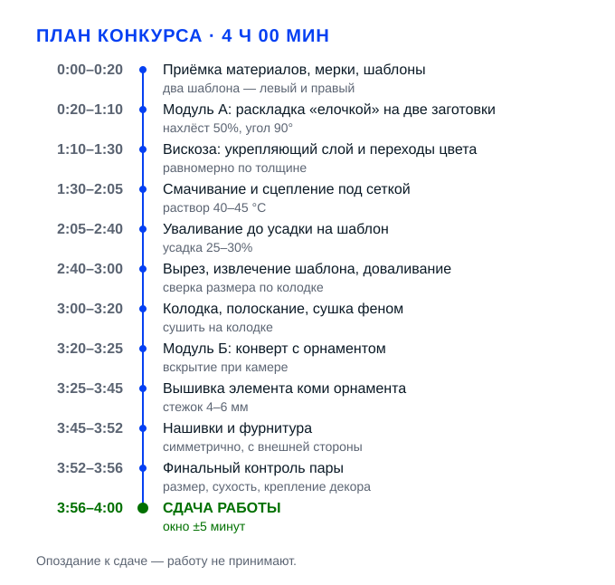

Войлочное искусство (Р)
Задания ниже — официальные файлы «Абилимпикс» (источник: abilympics-russia.ru), разложенные по категориям. Решения написаны по тексту задания, регламенту и критериям оценки; в них указано, что именно проверяет эксперт.
Школьник
14–16 лет, базовый уровень заданияВыдержка из официального конкурсного задания: страницы, относящиеся к категории «Школьник» (стр. 4–6 источника).
Пошаговое решение
Задание для школьников — плоская картина из шерсти формата А5, 148 на 210 миллиметров: сначала по заданному эскизу выкладывают шерсть на основу с флизелином, потом оформляют работу и закрывают стеклом. На всё даётся 4 часа: 3 часа на модуль А (изготовление, 60 баллов из 100) и 1 час на модуль Б (художественное оформление и стекло, 40 баллов). Ключевое отличие от других категорий: шерсть здесь не валяют — воду, мыло и трение не используют вообще, волокна держатся за флизелин и прижимаются стеклом. Поэтому работа идёт слоями, от дальнего плана к переднему, а каждый слой должен быть тонким: толстая раскладка под стеклом слёзживается в войлок и теряет рисунок. Тему эскиза объявляют на площадке, набор материалов у всех одинаковый, а критерий измеримый: размер, соответствие эскизу, колорит, отсутствие дефектов и качество сборки.

Задача 1. Разобрать эскиз и подготовить основуМодуль А · 60 баллов · 180 минут
Первые полчаса решают, будет ли работа читаться. Пока шерсть не тронута, нужно понять эскиз: сколько в нём планов, какие пятна главные, где свет, а где тень, из каких оттенков состоит каждый участок. Параллельно готовится основа — картон с натянутым флизелином, потому что на голом картоне волокна скользят и слой разъезжается при первом же переносе. Здесь баллы ещё не набираются, но именно на этом этапе закладывается всё, что потом оценивают в модуле А.
Действие 1.1. Принять рабочее место и проверить инструмент
Шаг 1.1.1
Садимся и сначала раскладываем всё, что дали, по зонам: слева — шерсть, разобранная по цветам, по центру — основа, справа — пинцет, ножницы, лист белой бумаги для настригания. Проверяем пинцет: кончики должны сходиться без зазора, иначе тонкую прядь он будет ронять, а не держать. Ножницы проверяем на обрезке шерсти — резать должны от основания до кончика, а не жевать волокно. Стекло и рамку не трогаем до модуля Б, но убеждаемся, что они на месте и целы.
Порядок на столе — не про аккуратность ради аккуратности. Шерсть разлетается от любого движения, и если цвета лежат кучей, через десять минут вы будете выщипывать нужный оттенок из общей массы, теряя время модуля А. Кроме того, работа с материалами и организация места входят в измеримый критерий: эксперт обходит площадку и видит, умеет ли участник держать порядок на площади 60 на 80 сантиметров.
Проверьте три вещи: пинцет держит волосок шерсти и не роняет его при встряхивании, ножницы режут прядь одним движением без затяжек, все цвета разложены отдельными кучками и подписаны, если упаковка не подписана. Стекло осмотрите на скол по кромке — со сколом оно не годится.
Самая частая ошибка — начать сразу выкладывать, оставив шерсть в пакетах: потом пакеты мешают, шерсть путается, а время уходит. Вторая — работать тупыми ножницами: они мнут волокно вместо среза, и вместо пуха получаются слипшиеся комки, которые не ложатся тонко.
Эксперт проходит по площадке в первые минуты и отмечает, разложены ли материалы по цветам и лежит ли инструмент на своих местах. Это первое впечатление о культуре работы, и оно держится весь конкурс.
Шаг 1.1.2
Смотрим на свет: стол должен освещаться так, чтобы тень от руки не падала на рабочую зону. Если лампа стоит сбоку и рука закрывает основу, разворачиваем лист или пододвигаем лампу до старта, а не в процессе. Руки вытираем насухо: влажные пальцы приминают пух и оставляют на шерсти тёмные следы, которые под стеклом видны как пятна. Синтетическую одежду с длинным ворсом лучше прикрыть фартуком — она электризуется и тянет волокна к себе.
Работа ведётся с точностью до одного волокна, и при боковом свете видно каждый слой: где легло густо, где просвет. Сухие руки — условие технологии: в этой категории шерсть не мочат, а мокрый палец склеивает пух в комок, и восстановить его уже нельзя. Статика тоже не мелочь: волокно, прилипшее к рукаву, уносится с работы, и на тёмном фоне остаётся проплешина, которая стоит баллов в модуле А.
Проверьте: на основу не падает тень от руки, когда вы сидите прямо; ладони сухие, без крема; на рукавах нет ворса, который лезет в шерсть. Посмотрите на стол сверху — все инструменты в пределах вытянутой руки, тянуться за пинцетом не нужно.
Ошибка — работать у окна с улицы: свет меняется, к вечеру работа выглядит иначе, и цветовые пятна приходится переделывать. Вторая — сесть так, что основа лежит далеко, и тянуться к ней корпусом: дыхание сдувает пух, а руки дрожат на весу.
Эксперт смотрит на посадку и на то, не сдувает ли участник шерсть дыханием и не трогает ли работу ладонью. Примятый ладонью слой виден сразу: волокна вдавлены в флизелин и лежат плоскими пятнами.
Действие 1.2. Разобрать эскиз на планы и цвета
Шаг 1.2.1
Кладём эскиз перед собой и размечаем его на три плана простым карандашом по краю листа: дальний (небо, вода, общий фон), средний (крупные объекты, которые читаются силуэтом) и передний (то, что ближе всего и прорисовано резче). Дальше по каждому плану выписываем оттенки: у фона обычно 3–5 родственных тонов, у главного объекта — 2–3, плюс один-два акцентных цвета. Получается список из 7–9 позиций, по которому и набирается шерсть.
В технике раскладки шерсти нельзя «перекрасить» участок: слой, положенный поверх, не убирает нижний, а смешивается с ним. Поэтому разбор на планы — это фактически чертёж последовательности: сначала всё дальнее, потом среднее, потом ближнее. Если начать с главного объекта, дальний план придётся выкладывать вокруг него, и края получатся рваными — а чистота краёв прямо влияет на оценку модуля А.
Проверьте себя вопросом: можете ли вы назвать, каким цветом и каким слоем ляжет каждый участок картины. Если хотя бы два участка описываются словами «ну, там что-то среднее» — эскиз разобран не до конца, вернитесь и добавьте оттенок в список.
Ошибка — считать эскиз картинкой и начать копировать его целиком, пятно за пятном. В шерсти так не работает: получается плоская аппликация без глубины, и дальний план начинает «наезжать» на передний, а это первое, что замечает эксперт.
Эксперт подходит и спрашивает, что участник делает в первую очередь и почему. Ответ «сначала фон, потом дальний план» показывает, что человек понимает технологию, а не просто копирует картинку.
Шаг 1.2.2
Определяем свет. Находим на эскизе самый светлый участок — обычно это небо, вода или блик, — и самый тёмный. Проводим мысленную линию от света к тени и отмечаем, куда падают тени от главного объекта. Светлые пятна в работе всегда делаются последними и самым светлым оттенком, тени — тёмным, причём тень никогда не бывает чёрной: она на два-три тона темнее основного цвета и уходит в холод (синеватый, зеленоватый) или в тепло (коричневатый).
Под стеклом шерсть выглядит темнее и плотнее, чем на столе: волокна приминаются, свет рассеивается иначе, и работа «садится» примерно на один тон. Если сразу положить тени в полную силу, под стеклом они превратятся в чёрные дыры, и колорит — отдельный пункт оценки — провалится. Светлые акценты, наоборот, под стеклом становятся мягче, поэтому их кладут с запасом.
Проверьте на эскизе: у вас есть не больше двух-трёх по-настоящему светлых пятен и столько же тёмных. Если тёмных участков получается половина картины, композиция перегружена, и работать надо не тенью, а средним тоном.
Ошибка — взять чистый чёрный и чистый белый: в шерсти они дают плоские дыры и «дырки» в слое. Второй промах — не учитывать, что стекло затемняет: половина участников выкладывает работу в расчёте на яркий цвет и получает глухую, тяжёлую картину.
Эксперт оценивает колорит и соответствие эскизу, поэтому смотрит на работу целиком, а не на отдельные пятна: есть ли свет, есть ли глубина, не «завален» ли средний тон.
Шаг 1.2.3
Готовим эскиз к работе физически: кладём его рядом с основой на одном уровне глаз, а не под руку, чтобы не смотреть на него сверху вниз. Если эскиз цветной и мелкий, полезно сделать для себя простую схему на клочке бумаги — пять-шесть прямоугольников с подписанными цветами. Не рисуем на самом эскизе и не обводим его на основе: любые линии под шерстью проступают, и убрать их потом невозможно.
Эскиз на уровне глаз нужен потому, что при взгляде сверху перспектива искажается: то, что кажется пропорциональным на столе, на стене выглядит растянутым. Схема на отдельном листе спасает от главной ошибки новичка — бесконечных возвращений к эскизу и потери счёта слоёв. А карандашные линии под шерстью — это дефект, который не исправляется: шерсть тонкая, графит просвечивает и оценивается как небрежность.
Проверьте: эскиз стоит вертикально или под углом 30–45 градусов и виден целиком; на основе нет ни одной карандашной линии; схема цветов лежит так, что её видно, не отрывая рук от работы. Эскиз должен быть виден целиком, без наклона головы.
Ошибка — положить эскиз под прозрачную основу и обвести контуры: линии останутся навсегда и проявятся под стеклом. Вторая — убрать эскиз в сторону «чтобы не мешал» и работать по памяти: к третьему часу память подводит, и пропорции уезжают.
Эксперт смотрит на основу до начала раскладки: чистая ли она. Разметка карандашом на флизелине — заметное нарушение, которое снижает оценку аккуратности.
Действие 1.3. Подготовить основу с флизелином
Шаг 1.3.1
Берём картон формата А5 — 148 на 210 миллиметров, ровно по размеру будущей картины, без запаса. Вырезаем флизелин с припуском 15–20 миллиметров с каждой стороны. Кладём флизелин ворсистой стороной вверх, натягиваем от центра к краям и приклеиваем припуски на обратную сторону картона: сначала серединки противоположных сторон, потом углы, и только потом остальное. Углы подрезаем по диагонали, чтобы не было утолщений.
Флизелин — это подложка, которая удерживает волокна: его поверхность с лёгким ворсом цепляет шерсть, и слой не сползает, когда вы переносите основу или поправляете край. Без него шерсть на гладком картоне живёт своей жизнью и сдвигается от любого касания. Натяжение и припуски важны практически: ненатянутый флизелин даёт волну, а волна под стеклом превращается в блик и морщину — прямой дефект модуля Б.
Проведите ладонью по натянутой поверхности: она должна быть ровной, без пузырей и диагональных заломов. Проверьте углы — они не должны топорщиться. Основа, положенная на стол, не должна качаться: если качается, картон поведён, берите другой лист.
Ошибка — натянуть флизелин «на глаз», с морщиной посередине: морщина не разгладится ни шерстью, ни стеклом. Вторая — приклеить только по двум сторонам: при натяжке третьей основа поведётся винтом, и края картины пойдут волной.
Эксперт проверяет основу на просвет и на ощупь: ровно ли натянут флизелин, нет ли складок. Это подготовительная часть модуля А, но дефект основы обнуляет аккуратность всей работы.
Шаг 1.3.2
Выбираем цвет флизелина под будущий фон. Под светлый фон берём белый или молочный, под тёмный и насыщенный — серый, бежевый или тот же тон, что и фон, но бледнее. Если флизелина в наборе один цвет, а фон задуман тёмным, первый слой шерсти кладём плотнее обычного, чтобы подложка не просвечивала. Края флизелина не должны выглядывать из-под шерсти ни на миллиметр по лицевой стороне.
Подложка работает как подмалёвок: она задаёт тон всему, что ляжет сверху, и через редкие места просвечивает. Белый флизелин под тёмной шерстью даёт холодные просветы, серый под светлой — грязь. Плотный первый слой нужен там, где подложка не совпадает по тону: это дешевле, чем потом заклеивать просветы поверх готового рисунка, когда сверху уже лежат акценты и любые правки их смазывают.
Посмотрите на основу под лампой под углом: цвет должен читаться ровно, без пятен и разводов. Проверьте края — флизелин не выглядывает по периметру. Если подложка просвечивает сквозь первый слой, это видно как более светлые точки, и слой нужно уплотнить.
Ошибка — взять первый попавшийся флизелин, не глядя на цвет: потом он «светит» через фон, и весь колорит уезжает в холод или в грязь. Вторая — оставить припуск флизелина по лицевой стороне: под стеклом бахрома по краю выглядит как брак.
Эксперт оценивает ровность тона фона и чистоту края. Просвечивающая подложка и лохматый край — типичные потери баллов в модуле А. Отдельно он смотрит на углы основы: там чаще всего остаётся незакрытая подложка.
Шаг 1.3.3
Закрепляем основу на столе двусторонним скотчем или обычным грузом по углам, чтобы она не ёрзала под пальцами. Рядом кладём лист белой бумаги — на нём будем настригать пух и проверять оттенки. Собираем «подушку» из чистой бумаги под пинцет: кончик пинцета не должен касаться стола, иначе он цепляет пыль и переносит её на шерсть. Всё лишнее — упаковки, обрезки, чужие инструменты — убираем из рабочей зоны на край стола.
Неподвижная основа — условие точной раскладки: одно неосторожное движение листа сдвигает уже выложенный слой, и его приходится снимать. Белый лист нужен для контроля: на нём видно истинный цвет пуха, тогда как на цветном столе оттенок врёт. А пыль и ворс на кончике пинцета — это те самые единичные волокна чужого цвета, которые под стеклом читаются как случайные тёмные точки.
Проверьте: основа не сдвигается, если нажать на неё пальцем рядом с краем; белый лист лежит в пределах вытянутой руки; на столе нет ничего, что вы не используете. Пинцет после протирания бумагой не оставляет серого следа на белом листе.
Ошибка — работать на нефиксированном листе: основа едет, и слой размазывается. Вторая — держать пинцет на столе между операциями: он собирает пыль и потом ставит её в самое светлое место картины, где любая тёмная точка видна.
Эксперт отмечает организацию рабочего места как часть критерия модуля А. Фиксация основы и чистый инструмент — признаки того, что участник работал в этой технике раньше.
Задача 2. Выложить фон и дальний планМодуль А · 60 баллов · 180 минут
Основной объём модуля А — это фон. На него уходит больше половины времени и почти весь запас шерсти, потому что фон задаёт глубину: именно по нему видно, плоская получилась картинка или в ней есть воздух. Дальний план выкладывается сразу после фона и всегда мягче, светлее и обобщённее переднего: никаких чётких контуров, только пятна и силуэты. Здесь работают три приёма — вытягивание прядей, ощипывание комочков и настригание пуха.
Действие 2.1. Подобрать шерсть по оттенкам
Шаг 2.1.1
Разбираем ленту на порции. От гребенной ленты отщипываем куски длиной 10–15 сантиметров и раскладываем по кучкам: под каждый пункт из цветового списка — своя кучка. Кучки держим рыхлыми, не сжимаем в шарики: сжатая шерсть потом плохо тянется и ложится толстыми комками. Объём каждой кучки — примерно с грецкий орех, для фона чуть больше, потому что фон самый большой по площади.
Гребенная лента устроена так, что волокна в ней лежат параллельно, и именно из неё удобно тянуть тонкие пряди. Если намять шерсть в плотный комок, волокна перепутаются, и вместо прозрачной пряди вы получите клочок, который ложится бугром. Разложенные по цветам кучки экономят время: за три часа к эскизу вы будете возвращаться десятки раз, и каждый раз искать нужный оттенок в общей массе — это потерянные минуты и потерянный колорит.
Проверьте: каждая кучка соответствует пункту цветового списка, ничего не пропущено. Возьмите щепотку из каждой и положите на белый лист: цвета должны отличаться друг от друга, а не сливаться в один. Если два оттенка на бумаге неразличимы — объедините их, не держите лишние.
Ошибка — оторвать шерсть большими кусками «на всё» и потом рвать их на ходу: рваные края дают утолщения, а на тонком фоне это видно как бугры. Вторая — смешать близкие оттенки в одну кучу: фон получится плоским, одним тоном, без глубины.
Эксперт смотрит, как участник обращается с материалом: тянет или рвёт, раскладывает по цветам или берёт из общей кучи. Аккуратная работа с лентой — признак владения техникой.
Шаг 2.1.2
Проверяем толщину волокна на ощупь и на просвет: тонкая шерсть 18–23 микрона просвечивает и на ощупь почти не чувствуется, грубая колется и выглядит как леска. Для картины под стекло нужна тонкая: она ложится прозрачными слоями и не даёт «ватного» эффекта. Если в наборе есть и тонкая, и грубая, тонкую берём на фон и лица объектов, грубую — только на плотные тёмные участки, где нужна масса.
Тонкая шерсть даёт главное свойство раскладки — просвечивание слоёв: сквозь верхний слой видно нижний, и цвет получается не плоским, а составным, как в живописи лессировками. Грубая шерсть просвета не даёт: она кроет наглухо, и работа выглядит аппликацией из фетра. Под стеклом разница усиливается, потому что стекло приминает волокна и делает их плотнее.
Возьмите пучок и посмотрите на свет: тонкая шерсть просвечивает ровным облаком, грубая читается отдельными толстыми волокнами. Положите рядом два пучка на белый лист — тонкий должен выглядеть дымкой, а не шнуром.
Ошибка — взять грубую шерсть на весь фон, потому что она кажется быстрее в работе: слой получается толстым, работа — тяжёлой, а мелкие детали потом не читаются. Вторая — не проверить и получить колючую поверхность, которая под стеклом блестит.
Эксперт оценивает фактуру поверхности: должна быть мягкая, без блеска и торчащих грубых волокон. Это часть критерия качества исполнения в модуле А. Торчащие грубые волокна он отмечает как дефект фактуры.
Шаг 2.1.3
Отдельно готовим «смесевые» оттенки, если их нет в наборе. Два соседних цвета — например, голубой и серый — растягиваем пальцами в тонкие облачка и складываем вместе, не перемешивая до однородности: получается переход, который в раскладке работает лучше, чем два чистых тона рядом. Такие смеси делаем заранее, по 2–3 штуки, и держим отдельными кучками с пометкой, где они применяются.
Переходные тона — то, что отличает живую раскладку от аппликации. Резкая граница двух цветов в шерсти выглядит как наклейка, а промежуточный оттенок, положенный между ними, съедает границу и создаёт объём. Заранее приготовленная смесь экономит время: смешивать на ходу, когда руки заняты пинцетом, неудобно, и участник обычно бросает это дело, оставляя грубые стыки.
Проверьте смесь на белом листе: должен читаться переход, а не два отдельных цвета. Если волокна лежат полосами, разотрите ещё раз кончиками пальцев. Смеси не должно быть много — излишек потом путается с основными цветами.
Ошибка — смешать всё в один грязный тон: получится «серая каша», которая убьёт колорит. Второй промах — сделать смесь слишком плотной, комком: она ляжет пятном, а не дымкой. Третий промах — сделать смесь на весь фон: её не хватит, и переходы выйдут рваными.
Эксперт смотрит на плавность переходов между цветовыми зонами — это отдельный пункт в оценке колорита модуля А. Он также смотрит, не осталось ли на работе следов пальцев и размазанных клочков.
Действие 2.2. Выложить первый слой фона
Шаг 2.2.1
Берём кучку основного фона и начинаем тянуть пряди. Зажимаем шерсть двумя руками: одна держит массу, вторая оттягивает кончик. Разводим руки на 15–20 сантиметров медленно, без рывка: получается прядь-облако шириной 5–8 сантиметров и толщиной в одно-два волокна. Тянем не поперёк ленты, а вдоль, по направлению волокон. Руки держим на весу, локти не опираем на стол.
Вытягивание, а не отрывание — принципиальный момент. При отрыве волокна рвутся поперёк и образуют пушистый комок с плотной серединкой; при вытягивании они распрямляются и ложатся ровным прозрачным слоем. Именно вытянутая прядь даёт ту самую дымку, из которой складывается фон. Рывок портит прядь: в ней появляются утолщения и «ступеньки», и на работе они читаются как полосы другого тона.
Проверьте прядь на просвет: она должна быть почти прозрачной, с ровными краями и без плотных сгустков. Если прядь рвётся в середине — вы тянете слишком быстро или взяли слишком толстый пучок; разделите его на две части и тяните медленнее.
Ошибка — тянуть рывком и получить комки: фон выйдет бугристым. Вторая — тянуть поперёк волокон: прядь разваливается на отдельные волоски, и раскладка становится похожа на паутину, которую невозможно уплотнить равномерно.
Эксперт смотрит на руки: тянет участник или щиплет. Техника вытягивания — базовый навык компетенции, и по ней сразу видно уровень подготовки. Он же смотрит на ширину пряди: слишком широкая ляжет бугром.
Шаг 2.2.2
Кладём первую прядь на основу и распределяем её в одном направлении — например, слева направо. Вторую прядь кладём поперёк, сверху первой, третью снова вдоль. Так, крест-накрест, застилаем весь формат. Каждую следующую прядь кладём с нахлёстом в половину ширины предыдущей, чтобы не оставалось просветов. Работаем от центра к краям, потом подрезаем лишнее по границе формата.
Перекрёстная раскладка нужна для равномерности: волокна, лежащие в одном направлении, дают полосы и «лысины» при боковом свете, а при переносе основы слой расползается вдоль волокон. Нахлёст в половину ширины обеспечивает сплошность: при нахлёсте в четверть остаются тонкие просветы, которые под стеклом читаются как светлые точки. От центра к краям работают потому, что край — самая уязвимая зона, и его формируют последним, уже видя общий тон.
Поднимите основу на уровень глаз и посмотрите на просвет: не должно быть мест, где виден флизелин. Проведите пальцем над поверхностью, не касаясь: поверхность должна быть ровной. Граница формата должна быть прямой, без выступающих волокон.
Ошибка — выкладывать пряди все в одном направлении: получаются полосы, а край осыпается при переносе. Вторая — экономить шерсть и оставлять просветы: под стеклом они превращаются в белую «сыпь» по всему фону, и это заметный дефект.
Эксперт проверяет равномерность слоя, осматривая работу под углом к свету. Просветы и полосы — первое, что бросается в глаза на этом этапе. Плотность у краёв он проверяет отдельно: там слой чаще всего тоньше.
Шаг 2.2.3
Проверяем толщину первого слоя. Она должна быть такой, чтобы через него едва просвечивала подложка, но сам слой уже читался как сплошной цвет. Если фон задуман плотным, кладём второй слой тем же способом, но пряди тянем тоньше. Общая толщина раскладки по всей картине не должна превышать 2–3 миллиметров: больше — и стекло не ляжет ровно, а рисунок «поплывёт».
Толщина — техническое ограничение этой категории. Картина закрывается стеклом и вставляется в раму: лишний объём не даёт стеклу прижаться, между ним и шерстью остаётся воздух, и под стеклом появляется конденсат и «пухлость». Кроме того, толстый слой при прижиме смещается, и мелкие детали, выложенные раньше, разъезжаются. Тонкий слой, наоборот, позволяет наращивать цвет поверх и сохранять рисунок.
Возьмите линейку и проверьте толщину в трёх-четырёх точках — у краёв и в центре. Разница не должна быть заметной на глаз. Посмотрите на работу сбоку, на уровне стола: поверхность должна быть ровной, без холмов.
Ошибка — наложить четыре-пять слоёв «чтобы поярче»: под стеклом получится войлочный блин, детали смажутся, а стекло встанет с зазором. Вторая — неравномерность: в одном углу тонко, в другом толсто, и при прижиме слой уедет в тонкую сторону.
Эксперт оценивает толщину и ровность раскладки, а на этапе модуля Б проверяет, как легло стекло. Толстая раскладка — частая причина потери баллов за сборку.
Действие 2.3. Уплотнить фон и распределить пятна
Шаг 2.3.1
Начинаем работать пятнами, а не сплошным слоем. Пинцетом или кончиками пальцев берём маленькие клочки шерсти, ощипывая их от конца ленты: клочок размером 5–10 миллиметров, рыхлый, с неровными краями. Кладём такие клочки на фон в тех местах, где по эскизу меняется тон, и слегка распушиваем их пинцетом на месте, чтобы край растворился в фоне. Пятна кладём по одному, не набирая сразу десяток.
Ощипывание даёт мягкое пятно с растворяющимся краем — в отличие от вытянутой пряди, у которой край всё-таки читается линией. Пятнами строится вся живописная часть: облака, кроны, тени на воде, неровности земли. Мелкий размер клочка принципиален: из крупного куска получается плотное пятно с чёткой границей, и оно выглядит наклейкой. Распушённый пинцетом край — то, что делает переход незаметным.
Проверьте: у пятна не должно быть видно границы — только изменение тона. Посмотрите на работу, прищурившись: если пятно читается отдельным островком, край не растворён. Пятна не должны быть одинакового размера — это признак механической работы.
Ошибка — класть пятна крупными кусками и прижимать их ладонью: получаются плоские острова. Вторая — располагать пятна симметрично и ритмично, как узор: фон становится декоративным и теряет глубину. Третий промах — прижать пятно пальцем: остаётся блестящая вмятина.
Эксперт смотрит на живописность фона: есть ли в нём нюансы, или это ровная заливка. Плоский фон — прямой минус по критерию колорита. Ему важно, чтобы пятна были разного размера и не повторяли друг друга.
Шаг 2.3.2
Высветляем светлые участки. Берём самый светлый оттенок из подобранных и тонкими прядями кладём его на те места, где по эскизу свет: край облака, блик на воде, освещённую сторону холма. Светлый слой всегда тоньше тёмного: две-три прозрачные пряди, а не плотный кусок. Границу светлого и основного тона проходим промежуточным оттенком, чтобы не было резкой полосы.
Свет в шерстяной картине строится не яркостью, а разницей толщин: там, где слой тоньше, подложка просвечивает и участок кажется светлее. Поэтому светлые места кладут прозрачно: плотный белый кусок выглядит как заплатка и убивает объём. Промежуточный оттенок на границе — тот же приём, что в живописи: он убирает «вырезанность» пятна и делает переход естественным.
Проверьте, прищурившись: светлое пятно должно читаться как самое светлое место на картине, но не выжигать глаз. Если пятно выглядит ярче, чем нужно, снимите часть волокон пинцетом — убрать лишнее проще, чем добавить.
Ошибка — положить чистый белый плотным слоем: под стеклом он станет серым и плоским, а вокруг появится грязный ореол. Вторая — высветлять уже после того, как выложены объекты: светлые волокна лягут на них и смажут силуэт.
Эксперт оценивает, есть ли в работе световоздушная среда. Отсутствие света — типичная ошибка школьников, и она заметна сразу. Проверяет он и то, не выжигает ли светлое пятно соседние участки.
Шаг 2.3.3
Уплотняем фон там, где он должен быть плотнее: у краёв, в затенённых зонах, под будущими объектами. Делаем это тонкими прядями, уложенными в направлении уже лежащих волокон, и не прижимаем ладонью. Для уплотнения удобно использовать приём «припудривания»: настричь немного пуха того же тона и рассыпать его над участком, а потом распределить пинцетом.
Плотность фона управляет глубиной: под объектами фон должен быть темнее и плотнее, иначе объект «висит в воздухе». Уплотнение по направлению волокон сохраняет структуру слоя, а прижим ладонью её разрушает — волокна вминаются, и участок начинает блестеть. Настриженный пух ложится ровнее, чем клочки: он распределяется по площади тонким слоем и не даёт бугров.
Посмотрите на участок под углом к свету: не должно быть блеска и вмятин. Плотность проверяется сравнением: затенённая зона должна быть заметно темнее соседней, но не превращаться в чёрное пятно. Настриженный пух не должен лежать отдельными «снежинками».
Ошибка — прижать фон ладонью, чтобы «сел ровнее»: получаются блестящие вмятины, которые под стеклом видны как жирные пятна. Вторая — переуплотнить фон до состояния войлока: он перестаёт просвечивать, и работа теряет глубину.
Эксперт осматривает поверхность на блеск и вмятины. Примятые участки — след неумелой работы, и они снижают оценку качества исполнения. Ему видно, работал участник ладонью или инструментом: вмятины не скрыть.
Действие 2.4. Обозначить дальний план
Шаг 2.4.1
Дальний план выкладываем после фона и до всех крупных объектов. Смотрим на эскиз: что находится в глубине — лес, горы, дома, дальний берег. Эти объекты не рисуем, а намечаем силуэтом: берём цвет на два-три тона светлее и на один тон холоднее основного цвета объекта и кладём пятно нужной формы ощипанными клочками. Пятно кладём от центра силуэта к краям, не наоборот.
Воздушная перспектива — правило, без которого картинка рассыпается: всё, что дальше, светлее, холоднее и менее контрастно. Если дальний план положить тем же тоном, что и передний, он «вылезет» вперёд, и пространство исчезнет. Кроме того, дальний план всегда обобщён: никаких деталей, только пятно. Именно эта обобщённость даёт ощущение глубины и позволяет глазу отдохнуть перед главным объектом.
Прищурьтесь и посмотрите на работу: дальний план должен уходить в глубину, а не спорить с фоном. Проверьте по эскизу положение силуэтов: они должны стоять на своей высоте, не «плавать». Края силуэтов должны быть мягкими, без резкой линии.
Ошибка — прорисовать дальний план так же подробно, как передний: получается «ковёр», в котором нет главного. Вторая — положить дальний план тёмным и тёплым: он выходит вперёд, и композиция переворачивается.
Эксперт оценивает передачу пространства и соответствие эскизу. Ошибки в планах — самая частая причина снижения оценки по композиции в модуле А. Отдельно он смотрит на высоту линии дальнего плана: она не должна прыгать.
Шаг 2.4.2
Мелкие объекты дальнего плана делаем скатыванием: берём клочок шерсти размером с горошину и катаем его между ладонями круговыми движениями 5–10 секунд, пока не получится рыхлый шарик. Шарик кладём на место пинцетом и слегка расплющиваем, чтобы он не выделялся объёмом. Так намечаем кроны, кусты, камни — всё, что читается как округлое пятно. Шарики катаем партиями по пять-шесть штук.
Скатанный шарик держит форму и не разваливается, в отличие от простого комка: волокна в нём зацеплены друг за друга. Для дальнего плана это удобно, потому что объектов много и они мелкие — шарик можно положить точно и не рассыпать. Расплющивание обязательно: объёмный шарик под стеклом даст бугор, а на дальнем плане любой бугор читается как ошибка масштаба.
Проверьте: шарики одинакового размера в пределах одной группы объектов, не разваливаются при переносе, не выступают над фоном выше миллиметра. Расстояние между ними должно соответствовать эскизу, а не быть равномерным.
Ошибка — накатать крупных шаров: дальний план превращается в горошины и читается как орнамент. Вторая — не расплющить шарики: под стеклом они дают тени и выглядят выпуклыми кнопками. Третий промах — скатать шарик слишком плотно: он ляжет камешком и даст тень.
Эксперт смотрит на масштаб деталей относительно формата А5: на таком размере всё мелкое, и крупные шарики сразу выдают ошибку. Он сравнивает размер шариков с толщиной жгутиков на переднем плане.
Шаг 2.4.3
Акценты и мелкие световые точки на дальнем плане ставим настриганием. Берём ножницы и стрижём шерсть нужного цвета над листом белой бумаги: получается пух, который падает на лист. Собираем пух пинцетом или кончиком ножа и переносим на работу, укладывая в нужное место. Стрижём коротко, движениями по 2–3 миллиметра, чтобы пух был мелким и однородным.
Настригание даёт самый мелкий и самый управляемый материал: пушинки ложатся по одной, и ими можно поставить точку света, не сдвинув соседние слои. Для формата А5 это критично: детали здесь размером с ноготь, и любая попытка положить их прядью смазывает всё вокруг. Белый лист под ножницами нужен, чтобы видеть цвет пуха и не потерять его на столе.
Проверьте: пух однородный, без длинных волосков; точки легли по эскизу и не «поехали» при переносе; под пинцетом они не сбиваются в комок. Посмотрите на расстоянии вытянутой руки — точки должны читаться, но не бросаться в глаза.
Ошибка — стричь шерсть прямо над работой: пух летит во все стороны и садится на уже готовые участки чужим цветом. Вторая — стричь крупно, кусками по сантиметру: получаются волоски, которые торчат из слоя.
Эксперт оценивает аккуратность мелких деталей и чистоту поверхности. Соринки и волоски чужого цвета — заметный дефект. Отдельно он смотрит на светлые участки: там любая соринка читается как царапина.
Задача 3. Выложить главный объект и акцентыМодуль А · 60 баллов · 180 минут
Главный объект — то, ради чего написана картина: он читается первым, и именно его сравнивают с эскизом. Здесь важны два свойства: точный силуэт и правильная разница тонов внутри объекта. Выкладывают главное в последнюю очередь, поверх фона и дальнего плана, тонкими прядями — так, чтобы нижние слои просвечивали и объект не выглядел наклейкой. На этот этап отводится примерно час, и он заканчивается проверкой на расстоянии.
Действие 3.1. Собрать пряди для основной фигуры
Шаг 3.1.1
Начинаем с силуэта. Определяем по эскизу габариты объекта: высоту и ширину в сантиметрах, положение относительно центра формата. Откладываем эти размеры прямо на основе — линейкой, не касаясь шерсти, а приставляя её сбоку. Затем берём вытянутую прядь основного цвета объекта и укладываем по контуру силуэта: сначала нижнюю границу, потом верхнюю, потом заполняем середину.
Силуэт выкладывается первым потому, что силуэт — это то, что опознаётся. Внутреннюю проработку можно уточнять бесконечно, но если контур «поехал», объект перестаёт быть похож на себя, и соответствие эскизу — главный пункт модуля А — теряется. Именно поэтому размеры сверяются линейкой, а не на глаз: на формате А5 ошибка в сантиметр — это уже заметное искажение, а глаз без опоры ошибается как раз на такую величину.
Проверьте: габариты совпадают с эскизом с точностью до 3–5 миллиметров, объект не смещён к краю, нижняя граница не «висит» в воздухе. Посмотрите на основу сверху и с уровня глаз — при взгляде сверху пропорции кажутся другими.
Ошибка — начать с середины объекта и наращивать края: к краям накапливается толщина, и силуэт расплывается. Вторая — выкладывать контур плотной прядью: получается жирная линия, и объект выглядит обведённым.
Эксперт сравнивает силуэт с эскизом на расстоянии и отмечает пропорции. Искажение пропорций — самая дорогая ошибка модуля А. Он также смотрит, не смещён ли объект к краю формата.
Шаг 3.1.2
Заполняем силуэт изнутри, работая не одним цветом, а тремя: основной тон на большую часть площади, тёмный — на теневую сторону и низ, светлый — на освещённую. Каждый следующий слой кладём тонкими прядями поверх предыдущего, с нахлёстом и без прижима. Сначала идёт основной тон, потом тень, потом свет: если начать со света, тёмное придётся класть поверх него, и свет потускнеет.
Объём в шерсти строится разницей тонов, а не рисованием деталей: глаз читает форму по градации от света к тени. Последовательность «основной — тень — свет» техническая: светлые волокна тонкие и прозрачные, тёмные плотнее, и если положить свет первым, тень его перекроет. Кроме того, послойная работа тонкими прядями даёт оптическое смешение цвета — тот же эффект, что у лессировки, и он держится под стеклом.
Прищурьтесь: объект должен читаться объёмным, с различимой теневой и светлой стороной. Проверьте, что тень не чёрная, а цветная, и что свет не «выжигает» силуэт. Границы между тонами должны быть мягкими.
Ошибка — выложить объект одним ровным тоном: получается плоское пятно. Вторая — положить тень чистым чёрным: под стеклом она превращается в дыру, и объект теряет форму. Третий промах — класть тень поверх света: свет гаснет, и объём пропадает.
Эксперт оценивает объём и живописность: видно ли, откуда свет. Плоский объект снижает оценку по колориту. Ему важно, чтобы тень была цветной: чёрная тень читается как дыра.
Шаг 3.1.3
Уточняем край объекта. Край не должен быть линией: по границе силуэта проходим короткими прядями, направленными вбок, чтобы волокна объекта и фона переплелись между собой. С внутренней стороны добавляем прядки того же цвета, с наружной — прядки фона, и слегка распушаем место стыка пинцетом. Так граница становится мягкой, но силуэт остаётся читаемым.
Мягкий край — признак ручной работы, жёсткий — признак аппликации. В технике раскладки шерсти ценится именно то, что объект «врос» в фон, а не наклеен на него. Переплетение волокон на границе даёт и практический эффект: при прижиме стеклом такой край не расходится и не образует щели, тогда как жёсткая граница при малейшем сдвиге даёт просвет до подложки.
Посмотрите на границу под углом: не должно быть полосы другого тона и не должно быть просвета до флизелина. Силуэт при этом должен оставаться узнаваемым — если край распушился слишком сильно, объект «тает».
Ошибка — обвести объект ровной линией: он читается как вырезанный и наклеенный. Вторая — распушить край до полной потери силуэта: объект растворяется в фоне. Третий промах — не распушить стык: под стеклом он проступит полосой.
Эксперт специально смотрит на стыки объектов и фона: мягкость перехода — критерий качества исполнения. Он смотрит на стык вблизи и на расстоянии: вблизи не должно быть щели, издалека — полосы.
Действие 3.2. Поставить акценты и блики
Шаг 3.2.1
Настригаем пух для акцентов. Определяем по эскизу 3–5 мест, которые должны притягивать взгляд: блик, самый яркий цветовой удар, контрастная деталь. Для каждого места стрижём отдельную порцию шерсти над белым листом — не смешивая цвета. Пух переносим пинцетом, укладывая по одной пушинке, и слегка прихлопываем кончиком пинцета, не прижимая. Пинцет держим вертикально, чтобы не задеть соседние слои.
Акцент — это точка, которая держит композицию: без неё взгляд не находит входа в картину. Но акцентов не может быть много: на формат А5 хватает трёх-пяти, иначе глаз «рябит», и работа выглядит пёстрой. Отдельная порция пуха на каждое место нужна потому, что смешанный пух теряет цвет, а прихлопывание без прижима позволяет пушинкам лечь на слой, а не утонуть в нём.
Прищурьтесь и отступите на два шага: глаз должен сразу находить акцент. Проверьте, что акцент не конкурирует с главным объектом по яркости. Пушинки должны лежать на поверхности, а не проваливаться в слой.
Ошибка — поставить акценты по всему полю: композиция рассыпается на пятна. Вторая — прижать пух пальцем: он уходит в слой и перестаёт читаться. Третий промах — поставить акцент того же тона, что и объект: он не читается.
Эксперт оценивает композиционный центр: есть ли он и не размыт ли. Отсутствие акцента — минус по композиции. Ему видно, стоит ли акцент на пересечении линий композиции.
Шаг 3.2.2
Тонкие светлые линии — прожилки, травинки, блики на воде — делаем жгутиками. Отщипываем узкую прядь длиной 3–5 сантиметров, складываем её вдоль пополам и катаем между ладонями или о край стола до состояния тонкого шнурка толщиной 1–2 миллиметра. Готовый жгутик укладываем пинцетом по месту и слегка расплющиваем, чтобы он врос в слой. Жгутик катаем на сухой ладони, иначе он слипнется в комок.
Жгутик держит форму и не распадается, потому что волокна в нём закручены и сцеплены. Из него можно сделать линию, которую невозможно получить прядью: прядь даёт облако, а линия нужна чёткая. Но именно поэтому жгутики опасны: чёткая линия на мягкой живописной работе выглядит графикой, и пользоваться ими надо скупо — на несколько самых важных акцентов.
Проверьте: жгутик не разваливается при переносе, толщина одинаковая по всей длине, линия не «гуляет». После расплющивания он должен читаться линией, а не верёвкой. Проверьте и то, что концы жгутика утоплены в слой, а не торчат.
Ошибка — сделать много жгутиков и обвести ими все контуры: работа превращается в рисунок шнуром. Вторая — положить жгутик толстым: под стеклом он даёт тень и выглядит приподнятым над плоскостью. Третий промах — положить жгутик поверх акцента: акцент раздавится.
Эксперт оценивает, уместны ли графические элементы в живописной работе. Перебор со шнурами — типичная ошибка. Он считает, сколько графических линий допустимо на формате А5: обычно не больше трёх.
Шаг 3.2.3
Завершаем модуль А проверкой на расстоянии. Отходим от стола на 1,5–2 метра и смотрим на работу целиком, не приближаясь. Потом берём зеркало и смотрим на отражение: перевёрнутое изображение показывает ошибки композиции, которые глаз не видит в привычном положении. Найденные перекосы записываем на бумагу, а не правим сразу — правки делаются в модуле Б, после того как работа отлежится.
Взгляд вблизи и на расстоянии — два разных теста. Вблизи видно фактуру, но не видно композиции; на расстоянии наоборот. Зеркало работает потому, что мозг перестаёт «дочитывать» знакомое изображение и видит то, что есть: заваленный горизонт, съехавший центр, слишком тёмный угол. Записывать, а не править сразу, — приём экономии времени: свежие правки на мокром месте обычно портят больше, чем исправляют.
Проверьте по списку: горизонт ровный, главный объект на месте по эскизу, нет тёмного угла, который тянет взгляд, акценты читаются. Всё, что не совпало, выписано для модуля Б. Проверьте и то, что работа не «заваливается» на одну сторону.
Ошибка — не отходить от работы вообще: участник три часа смотрит с 40 сантиметров и не видит грубых ошибок. Вторая — начать править всё сразу и размазать уже готовые участки. Третий промах — смотреть на работу только сверху: перспектива искажает пропорции.
Эксперт подходит к концу модуля А и смотрит работу на расстоянии. Именно в этот момент видно, цельная ли картина или набор пятен. Ему важно, чтобы картина читалась как целое, а не как набор фрагментов.
Действие 3.3. Сделать мелкие детали и фактуру
Шаг 3.3.1
Мелкие детали — глаза, пуговицы, ягоды, мелкие листья — делаем скатанными шариками разного размера: от 1 до 3 миллиметров. Катаем между подушечками большого и указательного пальцев, а не между ладонями: так контролируется размер. Шарик кладём пинцетом и слегка вдавливаем кончиком, чтобы он сел в слой, но не расплющился. Готовые шарики раскладываем на белый лист по размеру.
Мелкая деталь должна быть того же материала, что и всё остальное: шарик из шерсти сливается с раскладкой, тогда как бусина или кусочек пластика выбивается из фактуры и под стеклом даёт блик. Катание между пальцами даёт контроль размера — на формате А5 деталь в 3 миллиметра уже крупная, и ошибиться легко. Вдавливание без расплющивания сохраняет округлость, но убирает объём, который под стеклом дал бы тень.
Проверьте размеры линейкой на просвет: детали должны быть одного порядка. Посмотрите на работу на расстоянии: мелкие детали должны читаться точками, а не буграми. Проверьте и то, что шарики не разваливаются при переносе пинцетом.
Ошибка — накатать шариков крупнее, чем нужно: они становятся главными объектами. Вторая — приклеить деталь каплей клея: клей проступает на шерсти пятном и виден под стеклом. Третий промах — накатать шарики заранее и держать их в куче: они слипаются.
Эксперт проверяет масштаб деталей и чистоту вокруг них: клей, нитки и посторонние включения — дефект. Он смотрит, не выбиваются ли детали цветом из общего колорита.
Шаг 3.3.2
Добавляем фактуру там, где она нужна по эскизу: трава, шерсть животного, кора, вода. Для травы берём короткие жгутики и ставим их пучками, наклоняя в одну сторону. Для воды — тонкие горизонтальные пряди, уложенные с промежутками. Для коры — короткие вертикальные штрихи, положенные торцом пряди. Каждый приём повторяем несколько раз, но не превращаем в узор.
Фактура — то, что делает работу узнаваемой по материалу: шерсть позволяет передать пушистость и мягкость, чего не даст никакая краска. Но фактура работает только тогда, когда она разнородна: если все штрихи одинаковой длины и наклона, получается орнамент. Направление штриха подсказывает форму: трава растёт вверх, вода течёт горизонтально, кора идёт вдоль ствола.
Отойдите и прищурьтесь: фактура должна поддерживать форму, а не спорить с ней. Проверьте, что штрихи не выходят за границы своих участков и не лезут на фон. Плотность фактуры должна нарастать к переднему плану.
Ошибка — покрыть фактурой всю картину: работа становится шумной. Вторая — сделать штрихи одинаковыми: получается декоративный узор вместо изображения. Третий промах — положить фактуру поверх акцентов: они перестают читаться.
Эксперт оценивает, передана ли материальность объектов. Однородная фактура — признак шаблонной работы. Он проверяет, различаются ли фактуры разных объектов между собой.
Шаг 3.3.3
Проверяем чистоту работы: убираем волоски чужого цвета, пылинки, случайные пушинки. Делаем это пинцетом, поддевая волосок против его направления, а не сдувая — дыхание сдвигает соседние слои. Особенно внимательно проходим светлые участки и края: там любой тёмный волосок виден как царапина. Найденное складываем на отдельный лист, чтобы не вернулось обратно.
Чистота поверхности — отдельный и очень чувствительный критерий: на светлом фоне один тёмный волосок читается как дефект печати. Под стеклом контраст усиливается, потому что стекло прижимает волокна и делает их резче. Сдувать нельзя: поток воздуха сдвигает целые участки, и вместо одного волоска вы получите размазанное пятно. Поддевание против направления работает потому, что волосок лежит в слое под углом.
Проверьте при боковом свете: на поверхности не должно быть ни одного волоска другого цвета. Пройдите по краям и по самым светлым участкам отдельно — там ошибки заметнее всего. Проверьте и то, что ворс не остался на самом пинцете.
Ошибка — сдуть пылинку: вместе с ней уезжает слой. Вторая — оставить «мелочь»: под стеклом каждая соринка видна, и оценка аккуратности падает. Третий промах — тереть пятно пальцем: волокна вминаются и блестят.
Эксперт осматривает поверхность при боковом свете перед сборкой. Соринки и чужой волос — типичная потеря баллов. Он осматривает края и светлые участки в первую очередь.
Задача 4. Оформить картину и закрыть стекломМодуль Б · 40 баллов · 60 минут
Модуль Б — один час на то, чтобы работа стала картиной. Сюда входит всё, что участники обычно откладывают на последние минуты: устранение дефектов, стрижка торчащих волокон, уточнение контуров вытягиванием и сборка под стекло. Порядок именно такой: сначала правки на открытой раскладке, потом стрижка, потом стекло, потому что после стекла исправить уже ничего нельзя — любая попытка снять стекло сдвигает слой. На этот модуль приходится 40 баллов из 100, и теряются они в основном на спешке.
Действие 4.1. Устранить дефекты раскладки
Шаг 4.1.1
Осматриваем работу в трёх режимах: при верхнем свете, при боковом и на просвет. Верхний показывает цвет и общий тон, боковой — рельеф и бугры, просвет — просветы до подложки и толщину. Каждый найденный дефект записываем на лист: «просвет у левого края 2 см», «бугор на облаке», «тень слишком чёрная». Идём по списку сверху вниз, от крупного к мелкому, и не трогаем то, что не записано.
Три режима света ловят разные ошибки, и один режим не заменяет другой: при верхнем свете просветы не видны, при боковом не видно цвета, на просвет не видно рельефа. Список нужен, чтобы работать системно: без него участник начинает править то, что первым попалось на глаза, и к концу часа крупный дефект остаётся на месте. Порядок «от крупного к мелкому» экономит время — мелкие правки занимают секунды, крупные минуты, и их надо делать первыми.
Проверьте, что в списке есть все категории: просветы, бугры, ошибки тона, грязные места, нарушения силуэта. Если список пуст, а работа выглядит «нормально», посмотрите на неё в зеркало — обычно после этого находится два-три пункта.
Ошибка — начать править без осмотра и «улучшать» то, что и так в порядке: каждая правка сдвигает волокна, и работа постепенно размазывается. Вторая — осматривать только вблизи: крупные дефекты видит только взгляд с расстояния.
Эксперт в начале модуля Б обходит работы и фиксирует состояние раскладки. Именно на этом этапе видно, понимает ли участник, что у него получилось. Он же смотрит, не начал ли участник править работу, не разобравшись в ней.
Шаг 4.1.2
Убираем лишнее. Пинцетом поддеваем волокна в проблемном месте против направления укладки и снимаем их, не сдвигая соседние. Если слой лёг слишком плотно, снимаем не весь, а верхнюю часть: приподнимаем пучок и срезаем ножницами наискось, оставляя тонкий слой. Работаем от края дефекта к центру, а не наоборот, чтобы не загнать лишние волокна вглубь. Пинцет держим под острым углом к слою.
Убрать лишнее всегда труднее, чем добавить, и именно здесь теряется время. Приём «приподнять и срезать» позволяет уменьшить плотность, не разрушая рисунок: ножницы срезают верхние волокна, а нижние остаются на месте. Движение от края к центру — то же, что при удалении пятна с ткани: если начать с центра, волокна разъезжаются под пинцетом и дефект растягивается.
Проверьте после правки: граница участка должна остаться мягкой, а тон — ровным. Посмотрите на место правки при боковом свете: не осталось ли вмятины от пинцета. Если осталась — распушите её кончиком пинцета.
Ошибка — тянуть пучок целиком: вместе с лишним уходит и нужное, а на месте остаётся дыра. Вторая — резать ножницами плашмя по слою: получается плешина с резкой границей, которую потом видно под стеклом.
Эксперт оценивает, остались ли следы правок. Вмятины, плешины и размазанные участки читаются как небрежность. Он ищет следы правок при боковом свете, а не сверху.
Шаг 4.1.3
Добавляем недостающее. Просветы закрываем прядями того же тона, что и окружающий участок: прядь тянем тонко, кладём поверх и распушиваем края пинцетом. Слишком тёмные места высветляем двумя-тремя прозрачными прядями светлее основного тона. Слишком светлые — притемняем прядями на тон темнее, но не чёрными. После каждой правки отходим на два шага и смотрим, не выбивается ли заплатка.
Правка должна быть незаметной, иначе она становится новым дефектом. Просвет закрывается тем же тоном, потому что любой другой оттенок читается как пятно. Высветление прозрачными прядями работает за счёт просвечивания подложки — это единственный способ поднять тон, не убирая слой. Притемнение на тон, а не на два, нужно из-за эффекта стекла: под стеклом тёмное усиливается, и «чуть-чуть темнее» на столе превращается в явное пятно в раме.
Проверьте на расстоянии: место правки не должно выделяться. При боковом свете не должно быть утолщения. Сравните оттенок правки с соседними участками на белом листе — они должны совпадать по тону. Проверьте и то, что правка не изменила толщину участка.
Ошибка — заклеить просвет плотным куском: получается бугор другого цвета. Вторая — притемнять чёрным: под стеклом это чёрная дыра, которая перетягивает внимание на себя. Третий промах — оставить правку на виду: она читается как заплатка.
Эксперт ищет следы правок специально: заметная заплатка — минус за качество исполнения. Он сравнивает участки правок с соседними зонами по тону и толщине.
Действие 4.2. Выровнять стрижкой и вытяжкой
Шаг 4.2.1
Стрижём торчащие волокна. Ножницы держим почти параллельно поверхности, кончиками вверх, и срезаем только то, что выступает над слоем: движения короткие, по 2–3 миллиметра, без нажима. Начинаем с фона и дальнего плана, заканчиваем передним. После каждого прохода сдувать не надо — сметаем срезанное мягкой кистью в сторону, а не по работе. Ножницы держим кончиками вверх, не наклоняя к слою.
Стрижка убирает «пушистость», из-за которой работа выглядит неопрятной, и одновременно выравнивает плотность: торчащие волокна дают тень и создают ощущение грязи. Ножницы параллельно поверхности — единственный способ срезать волосок, не врезаясь в слой: при вертикальном срезе остаются ямки. Порядок «от фона к переднему» нужен потому, что срезанное с фона летит на передний план, и его придётся убирать повторно.
Проведите над работой ладонью на расстоянии сантиметра: поверхность должна быть ровной, без отдельных волосков, которые цепляются за кожу. При боковом свете не должно остаться «ёжика» из торчащих кончиков.
Ошибка — стричь с нажимом и врезаться в слой: остаются плешины, которые нечем закрыть. Вторая — стричь всю работу под ноль: уходит пушистость, ради которой и выбрана шерсть. Третий промах — стричь на весу, не придерживая слой: волокна выдёргиваются.
Эксперт проверяет поверхность на ощупь и на свет: ровная, без торчащих волокон, но и без лысин. Он проводит по поверхности тыльной стороной ладони: волоски не должны цепляться.
Шаг 4.2.2
Уточняем контуры вытягиванием. На границах объектов, где силуэт читается слабо, вытягиваем тонкую прядь нужного цвета и укладываем её по границе, слегка выходя за неё. Прядью же подчёркиваем самые важные линии: ствол, край крыши, линию горизонта. Тянем прядь длиной 2–4 сантиметра и толщиной в одно волокно — так, чтобы она не читалась как шнур. Прядь укладываем пинцетом, а не пальцами.
Вытянутая прядь мягче жгутика и потому безопаснее: она усиливает контур, не превращая работу в графику. Это тот приём, которым в модуле Б «дотягивают» работу до эскиза, когда по модулю А силуэт получился слишком мягким. Тонкая прядь на границе даёт оптический эффект: глаз достраивает линию, и объект становится читаемым, хотя физически линия почти отсутствует.
Прищурьтесь: контур должен читаться, но не быть резкой линией. Проверьте, что прядь не выходит за пределы объекта больше чем на миллиметр. На расстоянии двух метров силуэт должен опознаваться без подсказки.
Ошибка — обвести объект плотной прядью по всему периметру: выходит аппликация. Вторая — уложить прядь поверх уже готовых мелких деталей: они смазываются. Третий промах — уточнять контур после стрижки: срезанные волокна уже не вернуть.
Эксперт смотрит, читается ли контур с двух метров: линия должна быть мягкой, без вида обводки. Он же проверяет, не перекрыла ли прядь мелкие детали внутри силуэта.
Шаг 4.2.3
Выравниваем края по формату. Кладём на работу лист-шаблон 148 на 210 миллиметров с вырезанным окном и смотрим, не выходят ли волокна за границу и не осталось ли пустых полос по краю. Выступающие волокна подрезаем ножницами по линейке, не сдвигая слой. Край должен быть ровным, но не «стриженым под линейку» — допускается мягкая неровность в 1–2 миллиметра.
Граница формата — первое, что видно в раме, и именно по ней судят об аккуратности. Пустая полоса у края читается как недоделанная работа, а лохматый край — как брак. При этом идеально ровный, «отрезанный» край выглядит механически: в шерсти ценится живая кромка, поэтому допуск в 1–2 миллиметра — это не небрежность, а норма.
Проверьте: работа полностью закрывает окно шаблона, ни один участок не просвечивает подложкой, край не выходит за габарит больше чем на 2 миллиметра. По углам не должно быть утолщений. Проверьте и то, что углы не выходят за габарит рамы.
Ошибка — обрезать край «по линейке» и получить вид вырубленного изделия. Вторая — оставить пустую полосу у края: в раме она превращается в белое поле, и картина выглядит обрезанной. Третий промах — подрезать край, не придерживая слой: он уезжает.
Эксперт проверяет габарит А5 и чистоту края. Несоответствие размера — прямая потеря баллов модуля Б. Он прикладывает шаблон к работе и смотрит на просвет по краю.
Действие 4.3. Закрыть стеклом и закрепить
Шаг 4.3.1
Готовим стекло. Протираем его с двух сторон безворсовой салфеткой, проверяем на сколы по кромке и на пыль на просвет. Кладём стекло на чистый лист бумаги лицевой стороной вверх и ещё раз осматриваем: на нём не должно быть ни волоска, ни отпечатка. Размер стекла — 148 на 210 миллиметров, ровно по формату, без выступа за раму. Салфетку держим безворсовую, бумажную не берём.
Стекло — последний барьер, и всё, что на нём останется, останется навсегда: убрать пыль из-под стекла, не снимая его, невозможно. Отпечаток пальца под стеклом виден как радужное пятно, а волосок — как царапина на работе. Скол по кромке опасен практически: он может дать трещину при закреплении, и тогда работа останется без стекла вообще. Проверка на просвет ловит пыль, которую не видно на тёмном столе.
Проверьте: стекло прозрачное, без разводов и отпечатков; кромка целая по всему периметру; размер совпадает с форматом с точностью до миллиметра. Посмотрите на стекло под углом к свету — на нём видна любая пылинка.
Ошибка — протереть стекло рукавом или бумажным полотенцем: остаются ворсинки и разводы. Вторая — поставить стекло на ребро на край стола: скол или падение, и работа без стекла. Третий промах — положить стекло, не осмотрев его: пыль останется навсегда.
Эксперт осматривает стекло до сборки. Пыль и разводы под стеклом — дефект, который невозможно исправить после сдачи. Он смотрит на стекло под углом к свету, а не прямо.
Шаг 4.3.2
Накладываем стекло. Берём его за противоположные углы, держим параллельно работе и опускаем сначала на дальний край, затем плавно на весь формат — как крышку на кастрюлю. После касания стекло не двигаем: любое скольжение сдвигает волокна. Если под стеклом оказался волосок, стекло поднимаем строго вертикально, убираем пинцетом, снова осматриваем и опускаем заново.
Опускание с края, а не сверху, выдавливает воздух постепенно: при вертикальной укладке под стеклом остаётся воздушная подушка, и шерсть «дышит» — слой сдвигается после сборки. Неподвижность после касания — правило, которое спасает работу: волокна не приклеены, они только зацеплены за флизелин, и сдвиг стекла на сантиметр смазывает всё, что выложено. Поднимать стекло вертикально нужно потому, что при наклоне его кромка работает как скребок.
Проверьте: под стеклом нет волосков, пыли и воздушных пузырей; шерсть не сдвинулась — сравните с фотографией работы, сделанной до сборки; стекло лежит без зазора по всему периметру. Проверьте и то, что стекло не выходит за габарит основы.
Ошибка — положить стекло и «поправить» его сдвигом: слой уезжает, и картина размазывается. Вторая — опустить стекло под углом: кромка сгребает волокна в валик у края. Третий промах — прижать стекло ладонью: на шерсти остаётся вмятина.
Эксперт смотрит, как участник обращается со стеклом: небрежная укладка видна по сдвинутому слою и валику у кромки. Он смотрит на кромку стекла: под ней не должно быть волокон.
Шаг 4.3.3
Закрепляем работу в раме. Кладём раму лицевой стороной вниз, вставляем картину со стеклом, прижимаем паспарту или прижимные планки, затем закрываем задником. Задник крепим по периметру: клячки через каждые 5–7 сантиметров или бумажный скотч встык. Проверяем, что стекло не болтается и не давит на шерсть: между стеклом и слоем должен оставаться зазор не больше миллиметра.
Рама держит всё: без крепления стекло смещается при переносе, и работа приезжает на оценку со сдвинутым слоем. Клячки через 5–7 сантиметров — стандарт, при котором задник не коробится и не отходит по углам. Зазор важен технически: если стекло давит на шерсть, слой сминается пятнами, а если зазор слишком большой, шерсть «пухнет» и касается стекла в отдельных точках — получаются пятна контакта.
Проверьте: стекло не двигается при лёгком нажатии, задник прилегает по всему периметру, рама не перекошена. Посмотрите на картину с лицевой стороны: нет ли морщин и бликов от вмятин. Проверьте и то, что рама не шатается на столе.
Ошибка — приклеить задник только по двум сторонам: при переносе он отходит, и стекло едет. Вторая — прижать стекло слишком сильно: шерсть сминается, и на работе появляются тёмные вмятины. Третий промах — забыть про задник: работа останется открытой с обратной стороны.
Эксперт проверяет сборку: ровно ли лежит стекло, держится ли задник, нет ли перекоса рамы. Это финальные 40 баллов модуля Б. Он проверяет зазор между стеклом и шерстью на просвет у края.
Действие 4.4. Сдать работу
Шаг 4.4.1
Финальный осмотр: ставим картину вертикально, отходим на два метра, смотрим при дневном свете. Проверяем по короткому списку: размер А5, соответствие эскизу по композиции, колорит, отсутствие дефектов, стекло и рама. Если что-то не так — исправляем только то, что можно сделать за минуту; всё остальное оставляем, потому что разборка работы на этом этапе почти всегда ухудшает результат.
Финальный осмотр нужен как контрольный проход: за три часа глаз привыкает, и участник перестаёт видеть очевидное. Взгляд с двух метров и при дневном свете — это то, как работу увидит эксперт. Правило «только минутные правки» — защита от типичной ошибки последнего часа: участник начинает переделывать готовую вещь и портит её. В шерсти разборка почти необратима, слои не восстановить.
Пройдите по списку из пяти пунктов и убедитесь, что каждый выполнен. Проверьте, что работа подписана, если требуется, и что на стекле нет отпечатков от последних касаний. Проверьте и то, что рама стоит ровно, без перекоса.
Ошибка — начать переделывать композицию за десять минут до сдачи: работа становится хуже, а время уходит. Вторая — сдать, не посмотрев на работу с расстояния: перекос рамы замечают только так. Третий промах — трогать стекло руками перед сдачей: остаются отпечатки.
Эксперт оценивает работу целиком и сравнивает с эскизом. Целостность впечатления — то, что видно сразу. Он сравнивает работу с эскизом по композиции и колориту.
Шаг 4.4.2
Сдаём работу в срок и убираем место. Картину ставим на отведённую площадку лицевой стороной к эксперту, не прислоняя к другим работам. Инструмент протираем и складываем, обрезки шерсти собираем в мусор, остатки раскладываем по пакетам. Стол протираем, потому что шерсть липнет ко всему и переносится на соседние работы. Сдаём работу до окончания времени, а не в последнюю секунду.
Сдача в срок — формальное требование, и опоздание означает, что работу не принимают. Порядок на месте после сдачи тоже оценивается: обрезки шерсти разлетаются и садятся на чужие работы, и это создаёт проблемы и вам, и соседям. Кроме того, чистое место и собранный инструмент — часть культуры работы, которую эксперт фиксирует по ходу конкурса.
Проверьте: работа на площадке, стол чистый, инструмент собран, мусор вынесен, время сдачи не нарушено. Убедитесь, что картина не касается других работ и не стоит под прямым солнцем. Проверьте и то, что инструмент лежит там, где его выдали.
Ошибка — доделывать в последнюю минуту и сдать с опозданием: работу могут не принять. Вторая — уйти, оставив шерсть на столе: она разлетится по площадке. Третий промах — оставить обрезки на столе: они разлетаются по площадке.
Эксперт принимает работу и фиксирует время сдачи. Опоздание — вопрос, который решает главный эксперт. Он фиксирует время сдачи по часам, а не по словам участника.
Студент
учащиеся колледжей и техникумовВыдержка из официального конкурсного задания: страницы, относящиеся к категории «Студент» (стр. 4–6 источника).
Пошаговое решение
Задание категории «Студенты» — игрушка из шерсти по заданному эскизу: три часа на модуль А, где ваяют детали и собирают их в изделие техникой сухого валяния, и час на модуль Б, где игрушку декорируют глазками, носиком и цветовыми пятнами. Работа идёт иглами: № 38 задаёт объём и плотность, № 40 выглаживает поверхность и приваливает декор, а соединяют детали пряжей другого оттенка приёмом вбивания — шов здесь видимая часть композиции, а не то, что прячут. Решение разложено на пять задач и повторяет порядок, в котором валяние вообще держится: разобрать эскиз и подобрать шерсть, свалять голову с мордочкой, свалять туловище и парные детали, собрать всё в целое и только потом декорировать. Первые пятнадцать минут подготовки экономят час в конце, а слабый шов обнуляет и модуль А, и модуль Б.

Задача 1. Развернуть бокс и подобрать шерсть под эскизМодуль А · 3 часа · первые 15–20 минут
До первого прокола иглой должно быть понятно, из чего и какого размера вы валяете игрушку. На столе лежит только то, что понадобится в следующие три часа, иглы подписаны и разложены по номерам, эскиз разобран на детали и переведён в сантиметры, шерсть подобрана по типу волокна и оттенкам. Эта подготовка съедает меньшую часть модуля А, но именно она решает, успеете ли вы к третьему часу выйти на сборку, а не будете на ходу искать иглу № 40 в общей куче инструмента.
Действие 1.1. Разложить инструмент и проверить иглы
Шаг 1.1.1
Ставим на стол подложку для валяния — щётку-мат или плиту поролона толщиной не меньше пяти сантиметров, и придвигаем её к себе так, чтобы предплечья лежали на столе, а кисти работали над серединой подложки. Рядом, справа от подложки, ставим лоток с иглами в индивидуальных держателях, слева — коробку с шерстью, перед собой — пинцет, ножницы и линейку. Всё, что не нужно в первые полчаса, убираем в ящик: на столе площадью примерно шестьдесят на восемьдесят сантиметров каждая лишняя вещь становится местом, куда падает игла.
Игла при работе уходит в подложку на два-три сантиметра, и если под ней стекло, пластик или дерево, она либо ломается, либо тупится и начинает рвать волокно вместо того, чтобы его перепутывать. Поролон и щётка дают волокнам место разойтись, поэтому заготовка уплотняется равномерно, а не с плотной коркой снизу. Порядок на столе влияет на два критерия — организацию работы и качество поверхности.
Положите ладонь на подложку и нажмите: она должна пружинить и не продавливаться до стола. Проверьте, что подложка не свисает с края и не сдвигается от толчка ладонью. Иглы стоят в держателях вертикально, остриём вниз, и до каждой можно дотянуться, не вставая.
Самая частая ошибка — валять на журнале или разделочной доске: заготовка получается с плотной нижней коркой, верх остаётся рыхлым, и при сборке игрушка разваливается по слою. Вторая — держать иглы россыпью в стакане: за три часа вы перепутаете № 38 и № 40, а грубая игла на финише оставит вмятины, которые уже не выгладить.
Эксперт подходит к боксу в первые минуты и смотрит именно на организацию: есть ли подложка, разложен ли инструмент по зонам, не лежат ли иглы в общей куче. К середине модуля он возвращается и проверяет, сохранился ли этот порядок к третьему часу, когда на столе обычно всё уже перемешано.
Шаг 1.1.2
Проверяем иглы на свет и на ощупь: остриё должно быть ровным, без заусенцев и без изогнутого кончика, а насечки у рабочей части — чистыми, без войлочной пробки между гранями. Каждую иглу помечаем цветным скотчем на держателе: № 36 — один цвет, № 38 — второй, № 40 — третий. Пробку из насечек вычищаем щёткой для игл или выкручиваем между пальцами в сторону, обратную насечке, чтобы не сорвать зубцы.
Тупая или погнутая игла не перепутывает волокна, а пробивает в заготовке канал: шерсть расходится в стороны, поверхность становится рыхлой, и сколько ни бей в одно место, плотности не будет. Забитые насечки — вторая причина того же эффекта, и она особенно коварна, потому что внешне игла выглядит целой. Промаркированные держатели экономят секунды на каждой смене инструмента, а смен за четыре часа будет не меньше двадцати.
Проведите подушечкой большого пальца по острию вдоль — заусенец цепляется за кожу как микроскопическая заноза. Посмотрите на иглу против света: кончик должен быть прямым продолжением стержня, без «крючка». После чистки насечки на просвет дают ровный ряд зубцов, а не сплошную полосу шерсти.
Работать погнутой иглой «пока не сломается»: она рвёт волокно и оставляет борозды, а ломается обычно в самый неподходящий момент — на выглаживании мордочки, когда замена стоит не только минуты, но и ровности уже сделанной поверхности. Вторая ошибка — чистить иглу в сторону насечки: зубцы сминаются, и игла перестаёт захватывать волокно.
Эксперт смотрит на смену игл по ходу работы: если участник валяет весь модуль одной иглой, это видно по характеру поверхности и по темпу — плотность набирается медленнее, чем при правильной смене.
Шаг 1.1.3
Организуем шерсть: раскладываем её по плоским лоткам или пакетам в порядке, в котором она пойдёт в работу — сначала основной цвет, затем оттенки для пятен, затем отделочные пряди. Каждый лоток подписываем коротко и по-своему: «основа серый», «морда белый», «пятно рыжий». Гребенную ленту не выкладываем в общую кучу: её пряди должны лежать параллельно, иначе при вытягивании вы получите не ровную прядь, а клочья.
Сухое валяние идёт быстро, и любая пауза на поиск нужного оттенка — это минус два-три прокола в темпе, которых потом не вернуть. Подписанные лотки дают ещё один выигрыш: видно, сколько шерсти осталось, и вы не обнаружите на декорировании, что рыжий оттенок для пятна уже израсходован на основу. Критерий «соответствие эскизу по цвету и колориту» оценивается по готовой игрушке, но обеспечивается здесь, на разборе палитры.
На столе перед вами лежат не больше пяти-шести оттенков, и каждый узнаётся с первого взгляда. Проверьте, что лента не сваляна в комки и легко расслаивается пальцами: если прядь не отделяется, шерсть старая или пересушенная и работать с ней будет тяжело.
Сваливать всю шерсть в одну коробку «потом разберусь»: через час лента перепутается, и вместо ровных прядей вы будете выщипывать клочья, а на пятнах это даст грязные переходы. Вторая ошибка — отложить отделочные оттенки в другой конец стола: на декорировании, когда времени остаётся час, вы потратите его на ходьбу.
Эксперт видит палитру на столе и сверяет её с эскизом ещё до начала работы — по ней сразу понятно, попал ли участник в заданную тему и колорит. Второй раз он смотрит на лотки в конце модуля Б: если отделочные оттенки остались нетронутыми, значит, декор делался не по эскизу.
Действие 1.2. Разобрать эскиз на детали и снять размеры
Шаг 1.2.1
Кладём эскиз перед собой и разбираем его на составные части: считаем, из скольких деталей собрана игрушка, какая из них главная по объёму, какие накладные и какие парные. Отдельно отмечаем, где заканчивается одна деталь и начинается другая — линия шеи, линия посадки лапы, граница уха. Тут же выписываем на лист палитру: основной цвет, два-три оттенка пятен и цвет отделочной пряди для шва.
Эскиз в этом задании — единственный документ, по которому вас оценивают, и все критерии соответствия читаются из него: пропорции, посадка деталей, направление пятен, колорит. Разбор на детали заранее задаёт порядок валяния — от крупного объёма к мелкому, — и вы не окажетесь в ситуации, когда голова готова, а туловище приходится подгонять под неё на глаз. Практически весь модуль А держится на этом списке.
На листе появился перечень деталей с количеством: например, голова, туловище, две лапы, два уха, накладная мордочка. Каждая деталь названа так, чтобы через час вы сами понимали, о чём речь. Проверьте, что ни одна часть игрушки на эскизе не осталась без строки в списке.
Начать валять «с того, что нравится», не разобрав эскиз: к середине работы выясняется, что деталь не помещается в пропорции, и переделывать её нет времени. Вторая ошибка — читать эскиз как картинку, не выделяя границ деталей: на сборке становится непонятно, где именно должен проходить шов.
Эксперт в первые минуты спрашивает, сколько деталей в изделии, и по ответу видно, работает участник по эскизу или импровизирует. На сдаче он сверяет количество и посадку деталей с рисунком — пропущенное ухо или лишняя накладка видны сразу.
Шаг 1.2.2
Переводим эскиз в сантиметры: линейкой измеряем на распечатке высоту и ширину каждой детали и пересчитываем в натуральную величину по масштабу, который указан в задании, либо по высоте готового изделия, если масштаб не задан. Полученные размеры записываем столбиком на том же листе, рядом с названием детали, и добавляем к каждому запас: сухое валяние уменьшает объём пучка примерно на четверть, поэтому заготовку берём крупнее целевого размера.
Без числовых размеров «на глаз» пропорции уезжают уже к третьей детали, а соответствие заданным параметрам — это отдельное требование задания, которое проверяется линейкой на сдаче. Запас на усадку — не перестраховка: шерсть садится тем сильнее, чем дольше вы её уплотняете, и голова, свалянная в размер, к финишу окажется на треть меньше туловища.
На листе у каждой детали стоит пара чисел — высота и ширина в сантиметрах. Приложите линейку к эскизу ещё раз и сверьте два-три самых крупных размера: ошибка в пересчёте масштаба обычно даёт расхождение сразу в полтора-два раза, и её видно мгновенно.
Мерить «по клеточкам на глаз», не записывая числа: через сорок минут вы будете помнить размер головы приблизительно и вывалите её на сантиметр больше — игрушка станет головастой, и это уже не исправить стрижкой. Вторая ошибка — забыть про усадку и валять точно в размер.
Эксперт на сдаче прикладывает линейку к игрушке и к эскизу: расхождение по основным габаритам видно сразу, без разбора деталей. Отдельно он смотрит пропорцию «голова — туловище», потому что именно она выдаёт ошибку в пересчёте масштаба.
Шаг 1.2.3
Раскладываем работу по времени: модуль А — три часа, и в нём должно уместиться валяние головы, туловища, парных деталей и сборка. Пишем на листе три отсечки — к концу первого часа готовы голова и туловище вчерне, к концу второго — все детали уплотнены и выглажены, к началу третьего — начата сборка. Модуль Б с его часом на декорирование не трогаем: пятна и глазки делаются после сборки, на готовой форме.
Три часа на сухое валяние игрушки — это ровно столько, сколько нужно, если двигаться от крупного к мелкому и не возвращаться к уже сделанному. Участники, которые начинают с ушей и лап, к концу второго часа обнаруживают, что главные объёмы ещё не начаты, и доделывают их в спешке — отсюда рыхлая поверхность и неровная плотность, то есть потеря баллов сразу по двум критериям.
К контрольной отсечке у вас есть готовый объём и запас минут десять. Проверьте план на реальности: если голова заняла не сорок минут, а час с четвертью, уплотнение туловища надо вести активнее — крупной иглой и короткими сериями, а не выглаживать его сразу.
Планировать «как получится» и спохватываться за сорок минут до сдачи: в спешке детали собирают на жидкий шов, и игрушка разваливается при первом осмотре. Вторая ошибка — оставить сборку на последние двадцать минут, хотя приём вбивания требует не меньше получаса.
Эксперт отмечает темп: если к концу второго часа у участника гора несобранных деталей, это видно и по столу, и по тому, как он начинает торопиться. К началу третьего часа он ожидает увидеть собранную на булавках игрушку, а не отдельные заготовки.
Действие 1.3. Подобрать шерсть по типу волокна и оттенку
Шаг 1.3.1
Разделяем шерсть по назначению: гребенная лента, у которой все волокна лежат в одном направлении, идёт на поверхность — мордочку, пятна, уши, — потому что она даёт гладкую, ровную сторону и хорошо вытягивается в тонкую прядь. Кардочес и сливер, где волокна перепутаны, берём для внутреннего объёма и основы туловища: они быстрее уплотняются и дешевле по расходу. Сливер с растительными включениями на видимую поверхность не пускаем.
Разные волокна ведут себя по-разному под иглой, и это влияет на качество поверхности, которое входит в оценку модуля А. Гребенная лента уплотняется медленнее, но даёт ровный, слегка блестящий слой без пуха; кардочес садится быстро, зато пушится и «лохматит» край. Если пустить кардочес на мордочку, мелкие детали — носик, линия рта — утонут в пухе.
Возьмите по прядке каждого типа и скатайте между пальцами: лента скатывается в ровный жгут, кардочес — в комок с торчащими волокнами. Проверьте, что сливер не сыплется на стол мелкими включениями: если сыплется, он пойдёт только внутрь.
Валять всё подряд одной лентой: поверхность получается слишком гладкой и «стеклянной», объём набирается медленно, и к концу модуля игрушка не держит форму. Обратная ошибка — взять кардочес на мордочку и потом полчаса пытаться загладить пух иглой № 40.
Эксперт смотрит на изнанку и на разрез готовой игрушки: если внутри видны неуплотнённые клочья другого типа волокна, значит, объём набирали наспех и вперемешку. На поверхности он ищет пух — признак того, что видимый слой сделан из кардочеса.
Шаг 1.3.2
Подбираем оттенки под эскиз: основной цвет плюс два-три оттенка для пятен, причём берём их из одной цветовой семьи, чтобы переходы не выглядели грязными. Проверяем пару на пробнике: скатываем два небольших шарика, приваливаем один к другому и смотрим, как они стыкуются в тонком слое — на столе при искусственном свете шерсть часто выглядит иначе, чем в готовом валянии.
Колорит — это отдельное требование задания: изделие должно соответствовать заданной теме по цвету, и оценивают его на расстоянии вытянутой руки, где видно именно сочетание пятен, а не отдельные волокна. Пробник на двадцать минут экономит часы: несовпадение оттенков, которое на лотках незаметно, в привалянном виде проступает резкой границей, и перекрыть её сверху уже не получится — слой станет толстым и рыхлым.
Пробный шарик лежит рядом с эскизом, и при взгляде на них подряд видно, попадание есть или нет. Граница между двумя оттенками на пробнике должна читаться как мягкий переход, а не как шов. Если оттенок «спорит», замените его сейчас, пока он не израсходован на пятно.
Подбирать оттенки только на глаз по лоткам: под лампой бежевый кажется тёплым, а в привалянном виде уходит в серый, и пятно сливается с основой. Вторая ошибка — взять для пятна оттенок из другой цветовой семьи, например холодный голубой к тёплой основе: граница будет выглядеть грязью.
Эксперт на декорировании отходит на два-три шага и смотрит игрушку целиком — именно с этого расстояния оценивается колорит. Вблизи он проверяет границы пятен: размытые переходы и отсутствие грязных стыков между оттенками.
Задача 2. Свалять голову игрушки и вывести мордочкуМодуль А · 3 часа · примерно с 20-й по 70-ю минуту
Голова — самая заметная часть игрушки: по ней эксперт читает породу или образ, посадку глаз и общий характер изделия. Её валяют в два приёма: сначала грубой иглой набирают объём и плотность, потом средней иглой выглаживают поверхность до ровного войлока, и только после этого приваливают отдельный пучок на мордочку. Порядок не меняют: выглаженную поверхность легко испортить грубой иглой, а объём, набранный на готовой мордочке, сплющивает её.
Действие 2.1. Сформировать основу головы иглой № 38
Шаг 2.1.1
Отделяем от ленты пучок шерсти и распушиваем его пальцами, разводя волокна в разные стороны, чтобы не осталось плотных жгутов. Скатываем пучок между ладонями в шар, подтягивая волокна к центру, и добавляем шерсти до тех пор, пока шар не станет по объёму примерно в полтора раза больше целевого размера головы — с учётом усадки. Комок должен быть рыхлым внутри и без пустот: пустоту под иглой не видно, но она даст провал при уплотнении.
Форма головы задаётся не иглой, а тем, как вы скрутили пучок: игла только фиксирует то, что уже сложилось. Если внутри остался жгут или полость, после уплотнения на этом месте появится вмятина, и выводить её придётся, приваливая заплатку, — а заплатка на голове видна всегда. Запас в полтора раза — не произвольная цифра: за первые же десять минут активного валяния шар садится примерно на четверть.
Сожмите шар в кулаке и отпустите: он должен вернуться к прежней форме, а не остаться смятым. На поверхности нет торчащих плотных косичек — все волокна разведены. Сравните диаметр с записанным размером головы и убедитесь, что запас есть по всем трём осям, а не только по высоте.
Скрутить слишком тугой комок «чтобы быстрее уплотнился»: внутри остаются неперепутанные слои, и голова расходится по ним при сборке. Вторая ошибка — взять пучок точно в размер: к концу уплотнения голова окажется меньше туловища, и пропорция эскиза будет потеряна.
Эксперт смотрит, как участник держит заготовку и какого размера берёт пучок: слишком маленький комок сразу выдаёт неопытность. Позже он проверяет голову на вмятины — они остаются именно там, где внутри пучка была полость.
Шаг 2.1.2
Берём иглу № 38, ставим заготовку на подложку и начинаем часто бить по поверхности, вводя иглу почти вертикально на две трети длины, а не до упора. Проколы идут с шагом примерно пять миллиметров, ровными рядами, и через каждые два-три десятка проколов заготовку поворачиваем на девяносто градусов, чтобы ряды ложились в разных направлениях. Сначала проходим один полюс шара по кругу, потом второй, потом экватор.
Игла № 38 в задании названа первой не случайно: у неё толстое сечение и треугольная заточка, она захватывает сразу много волокон и перепутывает их между собой, то есть создаёт плотность. Вводить до упора нельзя: кончик упирается в подложку, заготовка подпрыгивает, а на поверхности остаются глубокие ямки. Поворот на девяносто градусов убирает «полосы» — уплотнение идёт по всем направлениям.
Проколите заготовку в разных местах ногтем: сопротивление должно быть одинаковым, без мягких провалов. На ощупь шар напоминает плотный войлок, а не вату. Держите его на весу за один бок — форма не должна провисать под собственным весом.
Бить иглой в одну точку, пока не покажется, что там уже плотно: получается провал с плотной коркой вокруг, и поверхность идёт волнами. Вторая ошибка — валять, держа заготовку на весу в руке: игла проходит сквозь шерсть и попадает в ладонь, а толщина получается неравномерной.
Эксперт смотрит на характер проколов — ровные, частые, без борозд — и на то, поворачивает ли участник заготовку или бьёт в одно место. Ряды проколов в одном направлении он отмечает как ошибку техники, даже если плотность набрана.
Шаг 2.1.3
Доводим плотность до состояния, когда заготовка не продавливается большим пальцем и пружинит, как мячик. На этом этапе добавляем шерсть там, где объём меньше эскиза: отделяем тонкую прядку, распушиваем её, накладываем на плоское место и приваливаем иглой № 38 по краям, а потом в середину. Добавлять лучше тремя-четырьмя тонкими слоями, чем одним толстым.
Заготовка игрушки по заданному эскизу — это результат модуля А, и рыхлая голова его не держит: она осядет при сборке, а после декорирования пятна провалятся вместе с поверхностью. Тонкие слои приваливаются без границы, толстый пласт даёт видимый «блин» на поверхности, который не убрать ни выглаживанием, ни стрижкой. Плотность — это ещё и то, что позволяет потом вбивать пряжу другого оттенка, не разрывая деталь.
Нажмите на заготовку ногтем: остаётся едва заметная вмятина, которая исчезает за пару секунд. Сожмите шар между ладонями — диаметр меняется не больше чем на десятую часть. Проверьте симметрию: положите заготовку на стол и посмотрите, не качается ли она набок.
Уплотнять до «каменного» состояния прямо сейчас: шерсть перестаёт принимать новые волокна, и приваливать мордочку будет не к чему — пряди лягут поверх гладкой корки и отойдут при первом же натяжении. Вторая ошибка — недожать и перейти к выглаживанию: игла № 40 только полирует, объём она не набирает.
Эксперт проверяет плотность на ощупь, взяв заготовку в руки, — это самый быстрый способ отличить работу с плотностью от работы «на вид». Он же сжимает голову в ладонях: чрезмерно плотная голова не примет декор, и это видно по тому, как ведёт себя игла.
Действие 2.2. Выгладить поверхность иглой № 40
Шаг 2.2.1
Меняем иглу на № 40 и работаем иначе: держим её не вертикально, а под углом примерно тридцать-сорок градусов к поверхности, и вводим на одну треть длины, мелкими частыми проколами, почти скользя по шерсти. Двигаемся по поверхности короткими рядами, как будто причёсываем заготовку, и на каждом участке проходим по два-три раза в разных направлениях. Нажим слабее, чем иглой № 38: здесь важно не заглубиться, а пригладить верхний слой.
Игла № 40 тоньше и имеет больше насечек на меньшей длине, поэтому она перепутывает самый верхний слой волокон, не пробивая канал вглубь, — именно так поверхность становится ровной и слегка «замшевой». Наклонный ввод — приём выглаживания: волокна укладываются вдоль движения, и пух исчезает. В задании этот приём назван отдельным пунктом, и он отличает заготовку от готовой детали.
Проведите по поверхности ладонью в одну сторону: она должна быть гладкой, без зацепов и без отдельных торчащих волосков. На косом свете от лампы не должно быть видно рядов вмятин от иглы № 38. Край заготовки слегка уплотнён и не распушается в руках.
Выглаживать той же иглой № 38 «наискосок»: насечки грубой иглы оставляют ряды углублений, и поверхность получается рябой. Вторая ошибка — вводить иглу № 40 глубоко, до подложки: тонкая игла на такой глубине играет и рвёт волокна, а не приглаживает их.
Эксперт смотрит на поверхность против света, наклоняя заготовку: рябь и следы грубой иглы видны именно так, а не при прямом взгляде. Он также отмечает угол ввода иглы — при вертикальной работе поверхность остаётся рябой.
Шаг 2.2.2
Отдельно проходим иглой № 40 по краю и по местам, где заготовка казалась рыхлой: край подворачиваем пальцами внутрь и приваливаем по кругу, уплотняя кромку так, чтобы она держала форму. Мелкие неровности — бугры и вмятины — выравниваем, приваливая сверху тончайшую прядку, растянутую до полупрозрачности, и проходя по ней иглой № 40 вдоль её направления.
Край — самое уязвимое место любой валяной детали: именно по кромке идёт разрыв при сборке, и именно кромка первой распушается. Тонкая прядка, привалянная сверху, работает как шпаклёвка: она заполняет вмятину, не добавляя заметной толщины. На этом этапе вы фактически делаете то, что в модуле А названо «выглаживанием поверхности головы», и от результата зависит, как лягут пятна на декорировании.
Проведите пальцем по кромке по кругу: она должна быть ровной по толщине, без «ступенек». Наклоните заготовку и посмотрите вдоль поверхности — бугры читаются как светлые пятна, вмятины как тени. Их не должно остаться ни одного на лицевой стороне.
Наваливать прядку вмятины и сразу бить по ней вертикально: получается бугор на месте ямы. Вторая ошибка — оставить кромку рыхлой, рассчитывая накрыть её при сборке: шов ляжет на рыхлую кромку и разойдётся при первой же нагрузке.
Эксперт осматривает кромку, сжав заготовку в пальцах: рыхлая кромка расползается под нажимом, и это видно без всяких приборов. Отдельно он проверяет, нет ли на лицевой стороне бугров от навалинных прядок — они читаются как заплатки.
Действие 2.3. Привалять объём мордочки
Шаг 2.3.1
Отделяем пучок под мордочку размером примерно в треть головы и формуем из него не шар, а овал с заострённым нижним краем: скатываем между ладонями, а потом сжимаем с боков, чтобы получился клин. Верхнюю часть оставляем распушённой — именно эти волокна пойдут внутрь головы и свяжут детали. Отдельно готовим ещё более мелкий пучок для подбородка или щёк, если они есть в эскизе.
Накладная мордочка — это пункт задания, где объём лица создаётся отдельным пучком, и форма этого пучка определяет выражение игрушки. Клин, а не шар, даёт естественный переход от лба к носу и позволяет посадить нос на заострённую часть. Распушённый верх — не небрежность, а техника: только перепутанные с основой волокна дают шов, которого не видно.
Овал держит форму в руке, не разваливается и по размеру закрывает примерно треть лицевой поверхности головы. Заострённая часть направлена вниз, в сторону носа. Приложите к эскизу — линия мордочки должна совпадать по высоте с рисунком.
Сформовать мордочку плотным шариком и привалять его как таблетку: получается наклейка с резкой границей по кругу, и сколько потом ни заглаживай, шов виден. Вторая ошибка — взять пучок больше трети головы: мордочка съедает лоб, и пропорции эскиза уезжают.
Эксперт прикладывает эскиз рядом с заготовкой и смотрит линию профиля: у правильно посаженной мордочки она читается сбоку, а не только анфас. Размер накладки он оценивает по отношению к голове, а не в сантиметрах.
Шаг 2.3.2
Прикладываем мордочку к голове и приваливаем сначала по периметру: иглой № 38 бьём по краю накладки, вводя иглу наклонно внутрь, чтобы волокна края уходили под поверхность головы, а не лежали поверх. Пройдя круг, переходим на иглу № 40 и проходим по границе тонкими частыми проколами, сплавляя два слоя в один. Середину мордочки не трогаем, пока не зафиксирован край.
Край накладки — это место, где два войлока стыкуются встык, и если сначала не закрепить периметр, приваливание середины вытолкнет шерсть к краям и поднимет их валиком. Наклонный ввод внутрь — приём, который прячет кромку: волокна уходят под поверхность основы и там перепутываются с ней. Переход иглы с № 38 на № 40 по границе убирает след от грубых проколов, и шов перестаёт читаться как линия.
Проведите пальцем по границе мордочки: она должна ощущаться как плавный подъём, без ступеньки и без валика. Посмотрите на заготовку сбоку — линия перехода идёт мягкой дугой. Потяните мордочку в сторону: она не должна отходить от головы даже на миллиметр.
Приваливать мордочку по центру, не закрепив край: края поднимаются, и вокруг мордочки появляется характерный валик, который невозможно убрать, не срезав лишнее. Вторая ошибка — вводить иглу вертикально по кромке: волокна края пробиваются насквозь и торчат снаружи пушистой бахромой.
Эксперт проводит пальцем именно по границе накладки — это место, по которому сразу видно, умеет ли участник прятать шов. Валик по периметру мордочки он фиксирует как дефект поверхности, а не как особенность формы.
Шаг 2.3.3
Проверяем посадку мордочки по трём осям: высота относительно линии глаз на эскизе, симметрия относительно средней линии головы и глубина выступания. Если мордочка ушла вбок, исправляем не срезом, а дополнительным приваливанием с той стороны, куда нужно сместить: добавляем тонкую прядку у края и уплотняем её иглой № 40, подтягивая объём в нужную сторону.
Симметрия и посадка деталей — то, что эксперт видит первым, ещё до того, как возьмёт игрушку в руки, и любая асимметрия читается как ошибка композиции, даже если валяние идеально. Смещение приваливанием, а не срезом, сохраняет целостность поверхности: срезанная мордочка теряет объём, и восстановить его можно только новой накладкой, на что уходит двадцать-тридцать минут из трёх часов модуля А.
Поставьте заготовку перед собой и приложите линейку вертикально через центр: мордочка должна делиться ею пополам. Приложите эскиз: линия перехода мордочки в голову должна совпадать по высоте. Посмотрите в зеркало или на фото с телефона — асимметрия на снимке видна резче, чем вживую.
Подрезать мордочку ножницами, чтобы выровнять: срез открывает рыхлую середину, и загладить её заново почти невозможно. Вторая ошибка — начать декорирование, не проверив симметрию: пятна и глазки, посаженные на кривую мордочку, подчёркивают перекос.
Эксперт отходит на шаг и смотрит игрушку анфас: перекос мордочки на этом расстоянии виден даже при беглом взгляде. Затем он поворачивает голову в профиль и проверяет высоту посадки мордочки по эскизу.
Задача 3. Свалять туловище, лапы и ушиМодуль А · 3 часа · примерно с 70-й по 130-ю минуту
Туловище в задании описано отдельно и с оговоркой: пучку придают форму конуса, а валяют его, начиная иглой № 38 и заканчивая иглой № 40. Конусность — не украшение, а рабочая геометрия: широкая часть даёт посадку на лапы и устойчивость, узкая переходит в шею и принимает голову. Парные детали ваяют одновременно и по счёту проколов, иначе они разойдутся по размеру и плотности, а на сдаче это читается как небрежность.
Действие 3.1. Свалять туловище в форме конуса
Шаг 3.1.1
Отделяем пучок под туловище — по объёму он примерно вдвое больше головы — и распушиваем его, разводя волокна веером. Формуем конус руками: широкое основание сжимаем ладонями, а верх подтягиваем пальцами, скручивая волокна к узкой части, чтобы они шли вдоль оси. Следим, чтобы узкая часть не получилась пустой: там, где конус сужается, шерсти нужно больше, а не меньше.
Конус — единственная форма, которая одновременно держит посадку головы и даёт игрушке устойчивость на столе, а устойчивость проверяется при осмотре готового изделия. Волокна, уложенные вдоль оси, работают как арматура: они стягивают конус по длине и не дают ему расползтись в «колбасу» при уплотнении. Пустая верхушка — самая частая причина того, что голова потом садится на бок.
Поставьте конус на стол широкой частью вниз: он должен стоять сам, не заваливаясь. Сожмите верхушку пальцами — она плотная по всей длине, без мягкого провала. Соотнесите высоту конуса с эскизом: от основания до линии шеи.
Скрутить пучок в цилиндр и потом «подстрогать» верхушку иглой: конус получается с перехватом посередине, и голова садится в ямку. Вторая ошибка — сделать основание слишком узким: игрушка не стоит и падает при малейшем толчке.
Эксперт ставит игрушку на стол и отпускает — падение или крен фиксируется сразу, без разбора деталей. Он же сжимает верхушку конуса: пустая верхушка выдаёт, что шерсть при формовке стягивали к основанию.
Шаг 3.1.2
Уплотняем конус иглой № 38, двигаясь от широкого основания к узкой части и обратно, рядами вдоль оси, с шагом проколов около пяти миллиметров. Каждые двадцать-тридцать проколов поворачиваем заготовку вокруг оси, чтобы уплотнение шло по кругу, а не только с доступной стороны. Особое внимание — зоне перехода, где конус начинает сужаться: там шерсть уплотняется медленнее всего.
Движение вдоль оси, а не поперёк, стягивает конус по длине и заодно выравнивает плотность: поперечные проколы дают поперечные же валики, и туловище начинает напоминать стопку блинов. Равномерность по кругу важна потому, что туловище потом держит на себе вес головы и шов: уплотнённая с одной стороны заготовка при сборке уводит игрушку в сторону от вертикали.
Проверьте плотность ногтем в четырёх точках по кругу — сопротивление одинаковое. Конус не гнётся при наклоне на тридцать градусов и возвращается в вертикаль. Диаметр основания по линейке совпадает с расчётным с точностью до половины сантиметра.
Валять туловище, держа его за верхушку: узкая часть растягивается и истончается, а после сборки именно там появляется разрыв. Вторая ошибка — уплотнять только видимую сторону, ту, что сверху: изнанка остаётся рыхлой, и игрушка «садится» на один бок.
Эксперт сжимает туловище поперёк оси: при неравномерном уплотнении оно складывается в одном направлении. Второй его тест — наклон игрушки на тридцать градусов: уплотнённый конус возвращается в вертикаль сам.
Шаг 3.1.3
Меняем иглу на № 40 и выглаживаем поверхность конуса наклонными проколами на треть длины, двигаясь по кругу снизу вверх. Отдельно проходим по кромке основания: подворачиваем её внутрь и приваливаем, чтобы низ туловища был плотным и плоским — именно он держит игрушку на столе. Верхушку конуса до блеска не заглаживаем, она уйдёт внутрь головы при сборке.
Выглаживание заданием предписано именно для туловища, и это логично: именно по нему видно, доведена ли деталь до состояния войлока или остановлена на полпути. Плотная плоская кромка основания — то, что позволит игрушке стоять, а не качаться. Верхушку оставляют рыхлой сознательно: распушённые волокна нужны для шва с головой, и гладкая поверхность там только помешает.
Поверхность конуса гладкая на ощупь, без торчащих волосков, при наклоне к лампе не видно рядов от иглы № 38. Основание плоское: приложите к столу — просвета по краю нет. Верхние два сантиметра остаются пушистыми, и это нормально.
Выгладить всю деталь целиком, включая верхушку: голова потом не привалится, будет держаться на честном слове и отвалится при первом осмотре. Вторая ошибка — не уплотнить кромку основания: низ туловища разлохматится, и игрушка начнёт «раскрываться» снизу.
Эксперт ставит заготовку на стол и слегка толкает: ровное основание держит, рыхлое подламывается. Он же проверяет, оставлена ли верхушка пушистой — гладкая верхушка означает, что голову приваливать будет не к чему.
Действие 3.2. Свалять парные детали: лапы и уши
Шаг 3.2.1
Отделяем шерсть сразу на обе лапы — двумя равными пучками, взвешенными на глаз по объёму рядом друг с другом, — и формуем их одновременно: скатали один, скатали второй, привалили к первому, привалили ко второму. Если лап четыре, делим шерсть на четыре части одним движением, разрывая ленту пополам, потом ещё пополам: так куски получаются почти одинаковыми без весов.
Парные детали — единственное место в игрушке, где разница видна абсолютно всем и сразу: две лапы разной длины или толщины читаются как брак, даже если каждая по отдельности сделана хорошо. Валяние парами даёт ещё и выигрыш по времени: пока одна деталь остывает под рукой, вы работаете над второй, и темп не падает.
Положите детали рядом: разница по длине не больше двух-трёх миллиметров, по толщине — на ощупь неразличима. Приложите их друг к другу — изгибы совпадают. Проколите обе ногтем в середине: сопротивление одинаковое.
Свалять одну лапу целиком, потом взяться за вторую и обнаружить, что шерсти осталось меньше: вторая выйдет тоньше, и разница будет видна на сдаче. Вторая ошибка — валять парные детали из разных оттенков одной ленты, если оттенок неоднородный: лапы получатся разного цвета.
Эксперт ставит парные детали рядом на стол — это первый тест, который он делает с игрушкой. Разницу в длине больше трёх миллиметров и разный изгиб он фиксирует как дефект симметрии.
Шаг 3.2.2
Формуем лапу вытянутым овалом: у основания шире, к концу чуть уже, с небольшим утолщением на месте будущей ступни. Уплотняем иглой № 38 по всей длине, вводя её вдоль оси детали, а не поперёк, и поворачивая заготовку после каждых десяти-пятнадцати проколов. Затем иглой № 40 выглаживаем поверхность и уплотняем торец, которым лапа будет касаться стола.
Лапы держат вес игрушки и принимают на себя всю нагрузку при перестановке, поэтому плотность в них важнее, чем в ушах. Проколы вдоль оси стягивают деталь по длине и не дают ей раздаться в «сардельку». Уплотнённый торец — это то, что делает посадку устойчивой: четыре рыхлых торца дают качание, которое не исправить никакой сборкой.
Лапа держит форму при сжатии пальцами и не гнётся в середине. Торец плоский, при прикладывании к столу не качается. Длина совпадает с эскизом, а конец лапы не разлохмачен. Поставьте две лапы рядом и сожмите вместе: они должны сблизиться равномерно, без перекоса.
Уплотнять лапу поперечными проколами: она раздаётся вширь и укорачивается, и посадить её в нужное место уже не получится. Вторая ошибка — оставить торец пушистым: лапа встанет на пух, который со временем сомнётся, и игрушка наклонится.
Эксперт нажимает на игрушку сверху: если лапы сложились, плотность недостаточна. Отдельно он смотрит торцы — рыхлый торец со временем сомнётся, и игрушка наклонится в сторону.
Шаг 3.2.3
Уши валяем иначе, чем лапы: берём тонкие прядки, распушиваем их в плоский лепесток и валяем на подложке, придерживая пальцами, иглой № 38 по краю, а потом № 40 по всей площади. Край лепестка истончаем: проходим по нему иглой под очень острым углом, захватывая только самые верхние волокна. Основание уха оставляем распушённым — им ухо крепится к голове.
Ухо — деталь, которая в готовой игрушке висит и просвечивает, поэтому грубая толщина и рыхлый край тут заметны сильнее всего. Истончённый край даёт тот самый эффект живой формы, по которому игрушку узнают. Распушённое основание — единственный способ посадить ухо без видимого шва: волокна основания уходят в голову и там перепутываются с её слоем.
Поднимите ухо против лампы: край просвечивает, толщина падает к кончику плавно. Основание пушистое и легко разбирается пальцами на отдельные волокна. Пара ушей одинакова по размеру и изгибу, а на просвет не видно ни одного отверстия от иглы.
Валять уши иглой № 38 до плотного войлока: они получаются толстыми и «деревянными», игрушка теряет характер. Вторая ошибка — истончить край слишком сильно и пробить его насквозь: на ухе появится дырка, которую видно на просвет.
Эксперт поднимает игрушку к свету: просвечивающие уши с ровным краем — признак аккуратной работы. Пробитое насквозь ухо он считает браком, даже если снаружи оно выглядит целым.
Задача 4. Собрать детали в изделие приёмом вбиванияМодуль А · 3 часа · последний час модуля
Сборка в этом задании описана отдельным пунктом и с указанием на материал: пряжей другого оттенка или цвета, приёмом вбивания. Значит, шов — не техническая необходимость, которую надо спрятать, а видимая часть композиции, и его цвет выбирают по эскизу. Ошибка на этом этапе обнуляет всё предыдущее: даже идеально свалянные детали, посаженные на слабый шов, расходятся при первом осмотре и на декорировании.
Действие 4.1. Примерить детали и подготовить стыки
Шаг 4.1.1
Собираем игрушку без крепления: ставим туловище на стол, кладём голову на верхушку конуса, прикладываем лапы и уши на их места по эскизу. Фиксируем положение булавками — по две на каждую деталь, наклонно, чтобы они не мешали работать иглой рядом. Смотрим на собранную игрушку с расстояния вытянутой руки и сверяем с эскизом: высоту, наклон головы, расстановку лап.
Примерка без крепления — единственный момент, когда всё ещё можно подвинуть бесплатно. После первого шва сдвинуть деталь можно только разрезав войлок, а это уже потеря формы. Булавки, поставленные наклонно, держат деталь, но не упираются в подложку и не мешают проколам рядом со швом, где плотность проколов максимальная.
Собранная на булавках игрушка совпадает с эскизом по трём вещам: общая высота, линия посадки головы, расстояние между передними и задними лапами. Детали не съезжают, если слегка толкнуть игрушку ладонью. Ни одна булавка не торчит в зоне будущего шва.
Начать сборку сразу с головы, не примерив остальные детали: после посадки головы выясняется, что лапы не достают до стола или уши упираются в туловище. Вторая ошибка — крепить булавки вертикально: они уходят в подложку и не дают нормально валять по кромке.
Эксперт смотрит на собранную без крепления игрушку и сравнивает её с эскизом — на этом этапе видно, держит ли участник пропорции. Позже он сверяет посадку головы: смещённая назад или вперёд голова читается на сдаче как ошибка композиции.
Шаг 4.1.2
Распушиваем контактные зоны: у головы — нижнюю часть, у туловища — верхушку конуса, у лап и ушей — их основания. Делаем это обратной иглой или просто растягивая волокна пальцами в стороны, пока не появится пушистая «борода» длиной около пяти миллиметров. Пух с одной детали накладываем на распушённую зону другой и слегка прихватываем иглой № 38, чтобы детали держались до основного шва.
Вбивание работает только тогда, когда волокна двух деталей перепутываются между собой: гладкая поверхность не даёт зацепа, и пряжа проходит мимо, не связывая ничего. Распушённые зоны создают тот запас свободных волокон, который потом уходит внутрь соседней детали. Прихватка иглой до основного шва — страховка: деталь не провернётся под пальцами в самый ответственный момент.
Волокна обеих деталей явно переплетены между собой, и при потягивании в стороны они натягиваются, а не расходятся с щелчком. Зона стыка на ощупь ровная, без ступеньки. Булавки можно снять — детали держатся сами.
Соединять гладкие, выглаженные торцы встык: шов получается поверхностным и разваливается при первой нагрузке. Вторая ошибка — распушить слишком большую зону: стык становится рыхлым, и на его уплотнение уйдёт время, которого нет.
Эксперт проверяет стык, потянув детали в стороны: правильно распушённый стык сопротивляется, а не раскрывается. Он же смотрит, не осталось ли на поверхности гладких, необработанных участков у самой линии шва.
Действие 4.2. Вбить пряжу и замкнуть шов по кругу
Шаг 4.2.1
Берём пряжу или тонкую прядку другого оттенка — по эскизу это отделочный цвет — и отрываем от неё отрезки длиной около пяти-семи сантиметров, распушивая каждый конец. Кладём прядку поперёк линии стыка, так чтобы она захватывала обе детали, и бьём по ней иглой № 38 вертикально, короткими частыми проколами: волокна прядки вбиваются внутрь и сшивают детали между собой. Прядки укладываем внахлёст, следующую начинаем там, где кончилась предыдущая.
Приём вбивания назван в задании прямо, и его смысл — не приклеить прядку сверху, а загнать её волокна вглубь, чтобы она работала как стежок. Короткие проколы держат прядку на месте: длинные пробивают её насквозь и выталкивают обратно. Отделочный цвет пряжи — часть композиции, заданной эскизом, поэтому шов читается как линия рисунка, а не как след ремонта.
Прядка не сдвигается, если потянуть её за конец, и не приподнимается над поверхностью. На стыке нет бугров: проведите пальцем — линия ровная. Цвет шва совпадает с указанным в эскизе и не спорит с основным тоном игрушки.
Наваливать прядку целиком, не распушив концы: она ложится валиком и держится только серединой, а концы торчат. Вторая ошибка — взять прядку в тон основе «чтобы не было видно»: тогда шов теряется, и работа выглядит незаконченной, хотя задание прямо предполагает другой оттенок.
Эксперт ищет шов глазами: он должен читаться как аккуратная линия, а не как случайное пятно. Отдельно он проверяет, попал ли оттенок шва в палитру эскиза и не спорит ли он с основным цветом игрушки.
Шаг 4.2.2
Идём по кругу стыка, вбивая прядки одну за другой, и закрываем полный оборот без пропусков. Первый проход делаем редким — по одной прядке на два-три сантиметра, — чтобы зафиксировать посадку и проверить, не ушла ли деталь в сторону. Второй проход заполняет промежутки и уплотняет линию; на нём иглу держим чуть наклонно, чтобы волокна шли вдоль шва и стягивали его.
Шов по кругу в один проход почти всегда даёт слабое место: деталь под весом пряжи слегка проворачивается, и на противоположной стороне появляется зазор. Два прохода — это ещё и разная плотность: редкий фиксирует геометрию, частый даёт прочность. Наклонный ввод вдоль шва стягивает линию, как стежок «назад иголку» в шитье.
Проведите по шву ногтем: линия ровная по всей длине, без провалов и без бугров. Между деталями нет щели, в которую проходит ноготь. Шов одинаковой ширины со всех сторон и не «уползает» в одну сторону.
Пройти круг один раз и считать сборку законченной: через десять минут работы над декором выясняется, что деталь гуляет. Вторая ошибка — вести шов с разной плотностью: на одной стороне линия тонкая, на другой широкая, и это видно при осмотре сверху.
Эксперт проверяет шов по всей длине, а не в одной точке: разная плотность сразу выдаёт спешку в конце модуля А. Он проводит по линии ногтем и ищет провалы — там, где прядки уложены редко, войлок расходится.
Шаг 4.2.3
Проверяем сборку на прочность до того, как идти дальше: берём игрушку двумя руками за голову и туловище и тянем в разные стороны с умеренным усилием, потом покачиваем голову вперёд-назад и в стороны. То же проделываем с каждой лапой и ухом. Если появился люфт или щель, добавляем прядку и вбиваем её в проблемное место, а не подклеиваем края и не оставляем как есть.
Люфт в стыке — главная причина того, что игрушка «разваливается» на осмотре: декоративные элементы держатся, а сам шов играет под пальцами. Проверка на разрыв занимает минуту, а её отсутствие стоит всей работы модуля А, потому что готовая игрушка по заданному эскизу — это цельное изделие, а не набор деталей. Дополнительная прядка в проблемном месте — штатный ремонт, она вписывается в шов и не видна.
После растяжения и покачивания щель не появляется, шов не белеет и не расходится. Игрушка поднимается за голову целиком, туловище идёт следом без задержки. Лапы не проворачиваются вокруг своей оси, а уши не отходят от головы при наклоне.
Оставить проверку на потом и обнаружить люфт на декорировании: пятна уже нанесены, и любое вмешательство в шов их испортит. Вторая ошибка — «усилить» стык клеем: клей на войлоке даёт корку, которая читается на поверхности и мешает дальнейшему валянию.
Эксперт тоже тянет игрушку за голову — этот приём он применяет к каждому изделию, и люфт виден сразу. Склеенный стык он определяет по корке на поверхности: клей на войлоке читается как блестящее пятно.
Задача 5. Задекорировать игрушку и сдать работуМодуль Б · 1 час
На декорирование заданием отведён отдельный час, и в нём три вещи: цветовые пятна, глазки с носиком и окончательное формирование. Пятна наносят вбиванием — тем же приёмом, что и шов, только прядями нужного оттенка и по разметке. Декор должен держаться без провисания: это прямо сказано в задании, и именно висящий глаз или отходящий носик портят впечатление от всей игрушки на осмотре.
Действие 5.1. Нанести цветовые пятна вбиванием
Шаг 5.1.1
Переносим границы пятен с эскиза на готовую игрушку: ставим булавки по контуру каждого пятна с шагом в сантиметр-полтора, потом соединяем их, слегка приваливая тонкую прядку контрастного цвета по линии — получается разметка, которую видно и которая сама уйдёт под основной слой. Сверяем с эскизом размеры пятен: большое на спине, малое у глаза, полоса на лапе — у каждого свой размер, и он записан при разборе эскиза.
Пятно, нанесённое без разметки, почти всегда съезжает и выходит крупнее задуманного: вбивание расширяет границу на два-три миллиметра в каждую сторону, и на маленьком пятне это заметная разница. Разметка булавками при этом не мешает валять — она стоит по краю, а не в центре. Соответствие эскизу по цвету и положению пятен — то, что оценивают в модуле Б в первую очередь.
Контур пятна замкнут, булавки стоят по его линии, и с расстояния вытянутой руки форма пятна читается так же, как на эскизе. Разметка не уползла на соседнюю деталь. Все пятна из эскиза перенесены, ни одного не пропущено.
Начинать вбивать пятно, не разметив границу: оно расползается, и остановить его можно только подобрав оттенок основы, а это лишние двадцать минут модуля Б. Вторая ошибка — переносить пятно «на глаз по памяти»: положение пятна относительно глаза или уха почти всегда смещается.
Эксперт прикладывает эскиз к готовой игрушке и сравнивает расположение пятен — это делается на сдаче, при хорошем свете. Смещённое пятно он отмечает как несоответствие эскизу, даже если само валяние выполнено чисто.
Шаг 5.1.2
Вбиваем пятно прядями нужного оттенка: отделяем тонкие, почти прозрачные прядки, распушиваем их и укладываем на размеченную площадь, начиная от центра и двигаясь к краю. Иглу № 38 держим вертикально, бьём часто и неглубоко, чтобы прядка вошла в основной слой, а не легла поверх. Край пятна проходим иглой № 40 под острым углом — так граница размывается и переход становится мягким.
Тонкая прядка даёт ровный цвет без бугра: толстая ложится валиком и после уплотнения читается как заплатка. Движение от центра к краю не даёт пятну расползтись за разметку — волокна у края уже удерживаются основой. Игла № 40 по границе нужна для того, чтобы пятно не выглядело наклейкой: именно размытый край делает цвет частью игрушки, а не аппликацией поверх неё.
Пятно не выступает над поверхностью: проведите ладонью — ступеньки нет. Граница перехода мягкая, отдельных торчащих волосков другого цвета нет. При наклоне к лампе цвет равномерный, без проплешин основы в середине пятна.
Вбивать пятно одной толстой прядкой: цвет ложится неровно, а после стрижки на этом месте появляются светлые проплешины. Вторая ошибка — вбивать по краю вертикально, без перехода: граница получается резкой, как обрезанная ножницами.
Эксперт смотрит на переходы цвета вблизи и на общий колорит изделия с расстояния — оцениваются оба. Резкая граница пятна читается им как аппликация поверх игрушки, а не как часть её поверхности.
Шаг 5.1.3
Доводим мелкие цветовые акценты: если по эскизу есть тонкие линии — полоса на спине, тёмные кончики ушей, — их наносят не прядями, а отдельными волокнами, вытянутыми до толщины нитки. Волокно укладываем по линии и вбиваем иглой № 40 почти плашмя, ведя вдоль линии, а не поперёк. Каждую линию проходим дважды с небольшим смещением, чтобы она получилась ровной по толщине.
Тонкая линия — самый заметный признак аккуратности: неровная полоса сразу выдаёт, что рука дрогнула, и на игрушке это видно издалека. Вбивание иглой № 40 плашмя прижимает волокно к поверхности, не разбивая его на отдельные пряди, — так линия остаётся линией. Второй проход со смещением закрывает пропуски, которые появляются из-за того, что волокно неодинаково по толщине.
Линия непрерывная, без разрывов и утолщений, ширина одинаковая по всей длине. При взгляде вдоль линии она не двоится. Концы линии сходят на нет, а не обрываются прямоугольником. Сравните линию с эскизом по длине: она должна заканчиваться там же, где на рисунке.
Вбивать линию поперёк её направления: волокно разбивается на короткие штрихи, и линия превращается в пунктир. Вторая ошибка — натягивать волокно при укладке: после вбивания оно стягивается и линия изгибается дугой.
Эксперт просматривает игрушку по частям, поворачивая её в руках, — тонкие линии он проверяет последними, после общих пропорций. Двоящуюся линию и разрывы он фиксирует как дефект декорирования.
Действие 5.2. Посадить глазки и носик
Шаг 5.2.1
Размечаем посадку глазок: проводим булавками среднюю линию мордочки и отмечаем две симметричные точки на уровне, заданном эскизом. Проверяем расстояние от каждой точки до средней линии линейкой — оно должно совпадать до миллиметра, — и расстояние от линии мордочки вниз. Тут же выбираем способ крепления: пришивные бусины, глазки на ножке или валяные шарики, если они есть в наборе.
Симметрия глаз — то, что эксперт видит в первую секунду и по чему судит о всей игрушке: даже миллиметровый перекос меняет выражение лица. Разметка линейкой, а не на глаз, единственный способ поймать симметрию на объёмной форме, где поверхность искривлена. Способ крепления выбирают до первого прокола, потому что под глазок на ножке нужно углубление, а под пришивную бусину — нет.
Расстояние от левой и правой точки до средней линии одинаковое по линейке. Точки стоят на одной высоте: соедините их булавкой — линия должна быть горизонтальной при взгляде анфас. При взгляде сбоку обе точки одинаково удалены от линии мордочки.
Размечать глаза «по симметрии мордочки», не проводя среднюю линию: мордочка почти всегда чуть асимметрична, и глаза встают по её перекосу — перекос сохраняется и усиливается. Вторая ошибка — посадить глаза выше или ниже линии эскиза: меняется характер игрушки, и это видно даже неспециалисту.
Эксперт закрывает игрушку ладонью до линии глаз и смотрит только на них — так перекос виден без отвлечения на декор. Затем он проверяет посадку глаз по эскизу: уровень и расстояние между ними.
Шаг 5.2.2
Пришиваем глазки ниткой в тон шерсти, сложенной вдвое, короткими стежками через край детали или сквозь голову, если глазок пришивной с отверстиями. Заводим иглу в войлок наклонно, подхватываем глазок и возвращаемся рядом — не больше чем в миллиметре от выхода нити. Делаем три-четыре стежка по кругу, затем узел, и узел уводим внутрь головы, прокалывая иглой толщу и натягивая нить, чтобы он спрятался между волокнами.
Декор должен держаться без провисания — это требование задания, и проверяется оно пальцем: эксперт берёт игрушку и слегка шевелит глаза. Три-четыре стежка по кругу распределяют нагрузку, поэтому глазок не провернётся и не повиснет на одной нити. Узел, уведённый внутрь, не виден снаружи и не даёт бугорка на мордочке, который остался бы, если завязать его поверх войлока.
Потяните глазок в сторону: он не смещается и не отходит от поверхности. Проведите пальцем по мордочке рядом — ниток и узлов не чувствуется. Глазки стоят одинаково глубоко, ни один не выступает сильнее другого.
Пришить глазок одним стежком «чтобы быстрее»: он держится на одной нити, проворачивается под пальцем и на осмотре читается как незакреплённый декор — прямое нарушение требования задания. Вторая ошибка — оставить узел снаружи: он виден как точка и портит лицевую часть.
Эксперт проверяет каждый элемент декора на подвижность — это отдельный пункт осмотра, и он занимает у него несколько секунд на игрушку. Провисший глаз он фиксирует как нарушение требования о качественном закреплении декора.
Шаг 5.2.3
Носик делаем по эскизу: если он валяный — отделяем крошечный пучок, скатываем плотный шарик или треугольник, приваливаем его иглой № 40 по краю, а потом проходим по центру, чтобы посадить плотнее. Если пришивной — крепим так же, как глазки, двумя-тремя стежками, с узлом внутри. Кончик носа, если по эскизу он темнее, вбиваем отдельным волокном тёмного оттенка, не выходя за границу носа.
Нос в композиции игрушки — точка, к которой сходится вся мордочка, и он должен сидеть точно по средней линии, иначе перекашивается всё лицо. Валяный нос держится на волокнах и не требует ниток, пришивной удобнее, если в наборе есть готовая фурнитура, — оба варианта допустимы, но оба должны быть закреплены без провисания. Тёмный кончик вбивают отдельно, потому что он меньше по площади, чем сам нос.
Нос стоит по средней линии: приложите линейку — она делит его пополам. Он не выступает над мордочкой больше, чем на эскизе, и не утоплен в неё. Потяните за кончик — нос не смещается. Тёмный кончик, если он есть, не выходит за границу носа.
Привалять нос слишком слабо, рассчитывая, что он «и так держится»: при декорировании он сдвигается, и мордочка перекашивается. Вторая ошибка — сделать нос крупнее эскиза: он перетягивает на себя внимание и ломает пропорции головы.
Эксперт смотрит на мордочку анфас и в профиль: нос должен читаться как объём, а не как наклейка. Смещённый с оси нос он считает ошибкой композиции, потому что от него зависит всё выражение игрушки.
Действие 5.3. Окончательно сформировать игрушку и сдать
Шаг 5.3.1
Стрижём лишний пух: берём маленькие ножницы с прямыми кончиками и срезаем торчащие волоски по поверхности, держа лезвия почти параллельно ей и работая кончиками, а не всей длиной. Идём по направлению роста волокон, короткими «щипками», и после каждого участка прочёсываем его пуходёркой или жёсткой щёткой, чтобы поднять оставшийся пух и увидеть, где ещё нужно снять.
Стрижка — то, что превращает заготовку в готовую игрушку: она выравнивает силуэт, убирает случайные волоски и делает поверхность ровной на просвет. Работа кончиками ножниц по касательной не даёт «лысин» — срез получается по отдельным волоскам, а не по целому слою. Прочёсывание между участками нужно потому, что приглаженный пух скрывает неровности, и без него стрижка идёт вслепую.
Проведите ладонью против ворса: поверхность ровная, без зацепов. На просвет силуэт читается чисто, без торчащих отдельных волосков по контуру. Нигде не видно светлых пятен от срезанного слоя, а пятна и линии декора остались целыми.
Стричь всей длиной лезвия и против ворса: остаются полосы и «ступеньки», которые уже не убрать. Вторая ошибка — срезать пух на пятнах: вбитые прядки короткие, и стрижка открывает проплешины основы, а восстановить цвет на этом месте уже нечем.
Эксперт смотрит силуэт на просвет и наклоняет игрушку к свету — стрижка проверяется именно так. Он же ищет «лысины» на пятнах: они означают, что волокно вбито слишком поверхностно.
Шаг 5.3.2
Сверяем готовую игрушку с эскизом по списку из первого действия: общая высота и пропорции, посадка головы, положение лап и ушей, все пятна на своих местах, колорит совпадает. Ставим игрушку рядом с эскизом, отходим на два-три шага и смотрим целиком, потом — вблизи, по частям. Замеченное исправляем сразу: подваляем прядку, поправляем линию, подрезаем волосок.
Требования задания сформулированы коротко: соответствие заданным параметрам и соответствие заданной теме по цвету и колориту. Обе вещи проверяются только так — сравнением готового изделия с эскизом, и лучше, чтобы это сделал участник до эксперта. Взгляд с двух-трёх шагов даёт общее впечатление, взгляд вблизи показывает дефекты; нужны оба, потому что эксперт смотрит именно в такой последовательности.
Все пункты списка закрыты, расхождений с эскизом не осталось. Игрушка стоит на столе без поддержки и не качается. С расстояния двух шагов она читается как тот самый образ, что нарисован в задании, а вблизи не видно незакрытых участков поверхности.
Сверять «по памяти» и не отходить от стола: с рабочего расстояния не видно общей композиции, и на сдаче обнаруживается, что голова великовата. Вторая ошибка — начать исправлять всё подряд за десять минут до сдачи: правки в спешке обычно ухудшают то, что уже было сделано хорошо.
Эксперт сравнивает игрушку с эскизом именно с расстояния и при хорошем освещении — это финальный этап оценки. Он проверяет соответствие заданным параметрам линейкой, а колорит — на глаз, отойдя на два шага.
Шаг 5.3.3
Убираем рабочее место: сметаем пух со стола в мусор, иглы вставляем в держатели остриём вниз, ножницы закрываем, остатки шерсти складываем в лотки, подложку очищаем щёткой. Игрушку ставим на сдаточный стол в том положении, в котором она должна рассматриваться, и рядом кладём эскиз, если правилами предусмотрено. Сдаём работу в окно, отведённое регламентом, — не в последнюю минуту.
Рабочее место входит в оценку организации работы, и пух на столе в момент сдачи читается как небрежность, даже если игрушка хороша. Иглы, оставленные остриём вверх, — прямая травмоопасность для того, кто будет убирать бокс после вас. Положение игрушки на сдаточном столе тоже имеет значение: её должны увидеть так, как задумано эскизом, а не лежащей на боку.
Стол чистый, инструмент на местах и в безопасном положении, остатки шерсти убраны. Игрушка стоит устойчиво, эскиз рядом с ней. Время сдачи зафиксировано в отведённом окне, а не за его пределами, и после сдачи участник не возвращается к доработке.
Оставить уборку «на потом» и сдать игрушку, оставив за спиной гору пуха и открытые иглы: теряются баллы за организацию и создаётся риск травмы. Вторая ошибка — дорабатывать игрушку после сигнала о сдаче: работу в этот момент уже не принимают.
Эксперт осматривает не только изделие, но и бокс: чистота стола и порядок с инструментом фиксируются в протоколе вместе с оценкой игрушки. Открытые иглы и пух на столе он отмечает отдельно, как нарушение организации работы.
Специалист
работающие профессионалыВыдержка из официального конкурсного задания: страницы, относящиеся к категории «Специалист» (стр. 4–9 источника).
Пошаговое решение
Категория «Специалисты» — следки из шерсти: четыре часа, два модуля и 100 баллов, из которых 80 даёт готовое изделие заданного размера (модуль А, три часа) и 20 — художественное оформление (модуль Б, один час). Работа мокрая и необратимая: сначала на плёнке выкладывается «елочкой» пара заготовок с нахлёстом прядей 50% и поворотом направления на 90 градусов, поверх ложится укрепляющий слой вискозы, потом всё смачивается мыльным раствором, сцепляется под сеткой, уваливается до усадки на шаблон, разрезается, доваливается по колодке и сушится феном. Ошибку раскладки исправить после уваливания нельзя, поэтому половина успеха — первые сорок минут: мерки, шаблон с припуском на усадку и ровные слои. Дальше идёт декор: нашивки, вышивка и элемент коми орнамента из конверта, который вскрывают перед камерой в начале модуля Б.

Задача 1. Организовать место, снять мерки и построить шаблоныМодуль А · 8 баллов
Следки валяют не «на глаз»: сначала снимаются мерки, потом строится бумажный контур, и только по нему вырезается плёночный шаблон с припуском на усадку. Восемь баллов этой задачи прямых не бывает — они проявляются позже, когда выясняется, села ли заготовка на шаблон и совпала ли пара по размеру. Но именно здесь решается, будут ли следки «заданного размера по колодке» или придётся доваливать наугад, теряя время модуля А.
Действие 1.1. Развернуть рабочее место и принять материалы
Шаг 1.1.1
Ставим на стол всё, что даёт организатор, и сверяем с перечнем по позициям: шерсть гребенную ленту трёх-четырёх оттенков, вискозу, сетку, пузырьковую плёнку, жидкое мыло, два полотенца, пульверизатор или губку, ножницы, колодку, нитки, иглы и пакет с фурнитурой. Каждый моток взвешиваем на кухонных весах и записываем вес на бумаге: на один следок в раскладке уходит 45–55 граммов шерсти, на пару — около 100, и если в наборе лежит меньше, лучше узнать об этом сейчас, а не на середине лицевого слоя.
Приёмка — единственный момент, когда недостачу ещё можно закрыть через главного эксперта: после старта замена идёт только по уважительной причине и с его разрешения. Вес и цвет важны не абстрактно: если не хватит шерсти основного тона, придётся добирать другим оттенком, а равномерность раскладки по толщине и колориту — это первое, что смотрит эксперт в модуле А на 80 баллов.
Все позиции отмечены, вес записан, расхождений нет. Отдельно проверьте, что сетка целая и больше шаблона на 10–15 сантиметров с каждой стороны, а в пульверизаторе свободно ходит шток, — иначе на смачивании вы потеряете пять минут на разбор забитого распылителя.
Начать раскладку, не проверив набор: в середине работы обнаруживается, что вискозы хватает на один следок, а шерсти тёмного тона нет вовсе. Вторая ошибка — принять материалы, не глядя на цвет: партия может отличаться по оттенку, и левый следок получится заметно темнее правого.
Эксперт проходит по местам в первые минуты и смотрит, разложены ли материалы по зонам и вскрыта ли упаковка. Хаос на столе он отмечает сразу — это часть оценки организации рабочего места.
Шаг 1.1.2
Делим стол на три зоны: сухая — слева, где лежит шерсть и идёт раскладка; мокрая — по центру, с плёнкой, сеткой и мыльным раствором; зона сушки — справа, с полотенцем и феном. Место по инфраструктурному листу — 3000 на 1900 миллиметров, проход между рабочими местами 1,5 метра, поэтому плёнку кладём не на край стола, а отступив ладонь, чтобы брызги не улетали на соседа и на пол.
Мокрая зона отдельно от сухой — не эстетика, а техника: шерсть, на которую попала вода, начинает сваливаться раньше времени, и тонкие пряди лицевого слоя теряют способность ложиться ровно. Пол под ногами тоже часть оценки: лужа у стола — нарушение охраны труда, за которое баллы снимают независимо от качества изделия.
Плёнка лежит ровно, не свисает со стола, сетка и полотенце под рукой, раствор в зоне доступа без перешагивания. Проверьте, что до розетки и фена можно дотянуться, не обходя стол, — сушка идёт в конце, когда времени меньше всего.
Разложить всё в одну кучу «по ходу разберусь»: на мокром этапе приходится искать сетку мокрыми руками, и она цепляет уже разложенные волокна. Вторая ошибка — поставить раствор так, что при наклоне он льётся на раскладку.
Смотрит на организацию в динамике: остаётся ли стол управляемым к третьему часу, когда вокруг мокро и всё липнет. Он же смотрит, не стоит ли раствор на краю стола, где его легко опрокинуть локтем.
Шаг 1.1.3
Готовим мыльный раствор заранее: в полтора литра тёплой воды 40–45 градусов разводим столовую ложку жидкого мыла или стружку хозяйственного, размешиваем до полного растворения и проверяем пальцем — вода должна быть горячее руки, но не обжигать. Слишком концентрированный раствор потом тяжело вымывается и оставляет на шерсти серый налёт, слишком слабый не даёт волокнам скользить и заготовка сваливается пятнами.
Температура и мыло — это то, что запускает сцепление: горячая вода раскрывает чешуйки волокна, мыло снижает трение, и пряди схватываются между собой. На холодном растворе первые пять минут притирания проходят впустую, а время модуля А расписано по минутам до самого выреза.
Раствор однородный, без хлопьев и пены шапкой, на ощупь скользкий. Капните на ладонь и разотрите: должно оставаться ощущение мыльности, а не просто мокрой воды. Если раствор остыл, долейте горячей воды и размешайте — заново разводить не нужно.
Взять воду «из-под крана» без проверки температуры: она остывает за десять минут, и к смачиванию второй заготовки раствор уже холодный. Вторая ошибка — сыпануть мыла на глаз: избыток пены мешает видеть волокна через сетку.
Может попросить показать раствор до начала раскладки — по консистенции он видит, работал ли участник с шерстью раньше. Отдельно уточняет, чем именно размешивали раствор: щепкой от шерсти или чистой ложкой.
Действие 1.2. Снять мерки и выкроить шаблоны
Шаг 1.2.1
Ставим ногу на лист бумаги, обводим стопу карандашом, держа его строго вертикально, и сразу измеряем три величины: длину от пятки до кончика самого длинного пальца, ширину по плюсне и обхват через подъём сантиметровой лентой. Мерки записываем на бумаге, а не запоминаем: дальше все расчёты идут от них, и перепутанная цифра стоит целого следка. Мерки подписывают прямо на листе, рядом с контуром.
Задание требует следки заданного размера по колодке, и колодка на площадке может быть не под вашу ногу — тогда мерки берутся с колодки, а не со стопы. Если мерить «примерно», припуск на усадку ляжет на неточную основу, и изделие придётся доваливать вслепую, теряя форму мыса и пятки.
Три цифры записаны и совпадают с реальностью: длина стопы 24–26 сантиметров для женской колодки, ширина 9–10, обхват 22–24. Приложите ленту повторно — расхождение в полсантиметра уже заметно на готовом следке.
Обвести стопу, держа карандаш под наклоном: контур получается на сантиметр шире, и следок выходит «лапой». Вторая ошибка — измерить длину по стельке обуви, которая всегда длиннее стопы. Не стоит измерять стопу в носке: он добавляет до сантиметра.
Уточняет, с чего сняты мерки — со стопы или с колодки. Если участник не может объяснить, откуда взялись цифры, дальше он проверяет результат наугад. Точность цифр он проверяет, прикладывая сантиметр к колодке.
Шаг 1.2.2
Строим контур шаблона с припуском на усадку: к длине стопы прибавляем 30–35 процентов, к ширине — 25–30, то есть при стопе 25 сантиметров шаблон получается около 33 сантиметров длиной и 12–13 шириной. Ось симметрии проводим по средней линии, мыс скругляем по форме пальцев, пятку делаем чуть уже мыса, а не наоборот — так следок держится на ноге и не спадает при ходьбе.
Шерсть при мокром валянии садится по площади на 30–40 процентов, и весь этот запас закладывается именно в шаблон. Если припуск мал, после уваливания полотно не сядет на шаблон и пойдёт складками у края, а следок окажется мал; если припуск велик, изделие будет болтаться и придётся доваливать его уже без шаблона, теряя форму.
Длина контура 33–34 сантиметра при стопе 25, ширина 12–13, контур симметричен относительно оси. Сложите бумажный шаблон пополам по оси — половины должны совпасть без перекоса. Если половины разошлись, шаблон перечерчивают, а не подрезают на глаз.
Прибавить «побольше, усядется»: излишний припуск не уходит в усадку целиком, и следок получается на размер больше. Вторая ошибка — сделать шаблон симметричным по пятке и мысу, забыв, что пятка уже. Занизить припуск на усадку тоже нельзя: полотно не сядет на шаблон и пойдёт складками.
Сверяет контур с колодкой на просвет — при несовпадении сразу видно, где участник ошибся с припуском. Ещё он смотрит, где на контуре отмечен верх: без пометки легко перепутать мыс и пятку.
Шаг 1.2.3
Вырезаем два шаблона из плотной плёнки или подложки под ламинат толщиной 0,3–0,5 миллиметра: левый и правый. На каждом простым маркером помечаем верх (сторона пальцев), низ (пятка) и наружную сторону, чтобы не перепутать заготовки после переворота. Плёнка не должна быть мягкой: на ней шерсть держит форму, а тонкий пакет рвётся при первом же скатывании в рулет.
Задание прямо требует двух заготовок — левой и правой, и путать их нельзя: следки вяжутся зеркально, и перевёрнутый шаблон даёт пару, где мыс смотрит в одну сторону. Пометки маркером на плёнке — единственная страховка, которая работает, когда руки мокрые и мыльные.
Два шаблона одинакового размера, пометки читаются, края ровные, без заусенцев. Приложите левый к правому зеркально — контуры должны совпасть, а не сдвинуться на сантиметр. Пометки должны читаться при мокрых руках: маркер не смывается водой.
Вырезать один шаблон и «обвести второй по нему на глаз»: разница в полсантиметра даёт пару разного размера. Вторая ошибка — взять плёнку от упаковки, которая растягивается под мокрой шерстью. Это видно на первой же примерке.
Смотрит на пометки и на то, лежат ли шаблоны зеркально, — это его первый сигнал, что участник понимает анатомию пары. Отдельно спрашивает, где верх: перевёрнутый шаблон даёт пару с развёрнутым мысом.
Шаг 1.2.4
Составляем короткий план на бумаге: какой цвет идёт на подошву, какой на лицевую сторону, где будет переход и что именно вышиваем в модуле Б. Рядом пишем время по этапам — раскладка до 1:10, вискоза до 1:30, смачивание и сцепление до 2:05, уваливание до 2:40, вырез и доваливание до 3:00, сушка до 3:20. План кладут под прозрачную плёнку, чтобы брызги его не размыли.
Четыре часа на два модуля — это 240 минут, и они уходят неравномерно: раскладка съедает больше, чем кажется, а сушка феном не ускоряется. План, записанный до старта, спасает от классической ловушки — увлечься декором и не успеть довалять изделие до нужного размера, а это 80 баллов модуля А.
План написан, время по этапам проставлено, цвета расписаны по слоям. К середине работы вы должны по одному взгляду на часы понимать, отстаёте или идёте в графике. Проверьте, что план виден с рабочего места, а не лежит в сумке.
Держать план в голове: на мокром этапе счёт времени теряется, и участник узнаёт о приближении сдачи, когда до неё остаётся пятнадцать минут. Вторая ошибка — расписать декор подробно, а раскладку оставить «как получится».
Иногда спрашивает, есть ли у участника план по времени, — и по ответу видит, умеет ли он распределять четыре часа. В середине конкурса он может спросить, сколько минут осталось до этапа, и сверить ответ с планом.
Задача 2. Выложить две заготовки «елочкой» на шаблонМодуль А · 24 балла
Самый ответственный этап: на пузырьковой плёнке вокруг двух шаблонов выкладываются слои шерсти так, чтобы направление прядей чередовалось под 90 градусов, а каждая следующая прядка перекрывала предыдущую на половину ширины. Такой «елочкой» полотно получается равномерным по толщине и не расходится при уваливании. Здесь набирается четверть модуля А: ровнота слоёв, симметрия пары и толщина, которая после усадки превратится в плотный войлок.
Действие 2.1. Уложить подложку и подошвенный слой
Шаг 2.1.1
Стелим на стол пузырьковую плёнку пузырями вверх, выравниваем, прижимаем по углам скотчем, чтобы не ездила. Шаблон кладём по центру первой половины плёнки, отступив от края 15–20 сантиметров: этот запас нужен, чтобы выступающие волокна потом завернуть на шаблон. Сверху проводим маркером контрольную линию оси — она пригодится, когда раскладка закроет сам шаблон.
Пузыри вверх дают воздушную подушку: при притирании ладонь продавливает волокна в пузырьки, и сцепление идёт быстрее, чем на гладкой поверхности. Закреплённая плёнка не сдвигается под руками — а если она поедет, поедет и вся раскладка, и заготовка выйдет перекошенной относительно шаблона.
Плёнка лежит ровно, без складок, шаблон не смещается при нажатии ладонью. Проведите рукой по краю: ни одного залома, иначе он отпечатается на подошве. Сдвиньте плёнку ладонью: она должна держаться, а не ехать по столу вместе с шаблоном.
Постелить плёнку пузырями вниз «чтобы не мешали»: сцепление идёт медленнее, и первые пять минут притирания уходят впустую. Вторая ошибка — не закрепить плёнку: к концу раскладки она сползает на десять сантиметров.
Отмечает, закреплена ли плёнка и совпадает ли шаблон с осью стола, — по этому видно, готовился ли участник к мокрому этапу заранее. Заодно отмечает, лежит ли шаблон по оси стола, а не наискось.
Шаг 2.1.2
Начинаем подошвенный слой: вытягиваем из гребенной ленты пряди длиной 12–15 сантиметров и укладываем их поперёк шаблона, отступая от контура на 3–4 сантиметра со всех сторон. Каждую следующую прядку кладём с нахлёстом на предыдущую ровно на половину ширины: при ширине пряди 4 сантиметра шаг получается 2. Толщина первого слоя — около 3 миллиметров, волокна не приглаживаем, они должны лежать воздушно.
Нахлёст 50 процентов — требование задания, и он не формальность: там, где пряди только касаются друг друга, при уваливании образуется тонкое место и дырка. Выступ за контур на 3–4 сантиметра — запас на усадку и на подворот, без него край подошвы после уваливания станет тоньше остального полотна.
Пряди лежат параллельно, нахлёст везде одинаковый, просветов на просвет не видно. Поднимите заготовку мысленно на свет: не должно быть мест, где видно плёнку. Отойдите и посмотрите на раскладку сбоку: поверхность должна быть ровной, без валиков.
Раскладывать пряди «как ляжет», без нахлёста: на готовом следке это проявится полосами и тонкими участками, за которые снимают баллы за равномерность. Вторая ошибка — вытягивать пряди шире 6 сантиметров: они не успевают схватиться в середине и расползаются.
Смотрит на нахлёст и на то, выходит ли раскладка за контур равномерно со всех сторон, — это его базовый тест на владение техникой. Если нахлёст гуляет, он прогнозирует полосы на готовом следке.
Шаг 2.1.3
Второй слой кладём под углом 90 градусов к первому — то есть вдоль шаблона. Пряди той же длины, тот же нахлёст в половину ширины, концы выходят за контур на те же 3–4 сантиметра. Именно чередование поперёк-вдоль и даёт ту «елочку», при которой полотно тянется одинаково в обе стороны и не рвётся по линии слоя. Первый слой при этом не приглаживают: воздух между слоями нужен для сцепления.
Однонаправленная раскладка — самая частая причина брака на мокром валянии: полотно садится только поперёк волокон и перекашивается, а мыс уходит в сторону. Перекрёстные слои держат форму и после усадки дают ровную поверхность без бугров, что напрямую влияет на оценку готового изделия.
Направление слоёв читается: первый поперёк, второй вдоль, граница между ними не видна как ступенька. Поднесите ладонь: толщина по всей площади одинаковая на ощупь, без провалов. Толщину по краю и в центре измеряйте линейкой в четырёх точках.
Уложить второй слой в том же направлении, что и первый, «так быстрее»: полотно потом садится неравномерно, и следок ведёт в сторону. Вторая ошибка — начать второй слой с середины, оставив край в один слой.
Проверяет перекрёстность слоёв, приподнимая край заготовки: у опытного участника видно направление волокон без разбора. Ему достаточно приподнять край, чтобы увидеть угол между слоями.
Шаг 2.1.4
Кладём третий слой по диагонали, снова с нахлёстом в половину пряди, и доводим раскладку до толщины 8–10 миллиметров — на подошву уходит три-четыре слоя и 25–30 граммов шерсти. Взвешиваем заготовку на весах вместе с шаблоном и вычитаем вес шаблона: так толщина контролируется цифрой, а не на глаз. Если вес меньше 25 граммов, добавляйте слой, а не уплотняйте уже уложенный.
Подошва несёт всю нагрузку при ходьбе, и недоложенная шерсть протирается за несколько недель — но на конкурсе важно другое: тонкая подошва садится быстрее верха, и следок выходит перекошенным, с задранным мысом. Перебор тоже плох: толстое полотно не уваливается до нужной плотности за отведённое время.
Вес подошвенной части 25–30 граммов, толщина по краю и в центре одинаковая. Приложите линейку к срезу у края шаблона: разница между центром и краем не больше 2 миллиметров. Разница видна на просвет: у края полотно не должно светиться.
Добрать толщину «сверху потом»: верхний слой ложится на неровную основу, и после уваливания на лицевой стороне проступают бугры. Вторая ошибка — взвешивать, не вычтя вес шаблона. Без вычета веса шаблона цифра завышается на 40–60 граммов, и толщина уходит в перебор.
Может поинтересоваться весом раскладки: цифра сразу показывает, считает участник материал или берёт горстями. Он может попросить назвать вес раскладки: цифра показывает, ведёт участник расчёт или импровизирует.
Действие 2.2. Перевернуть заготовку и выложить лицевой слой
Шаг 2.2.1
Аккуратно подхватываем раскладку вместе с шаблоном обеими ладонями снизу, переворачиваем и кладём выступающими краями вверх. Каждый выступ подгибаем на шаблон на 2–3 сантиметра, разглаживаем пальцами, а углы у мыса и пятки подрезаем ножницами по диагонали — иначе в углу получится утолщение в четыре слоя, которое не уваливается вместе с остальным полотном.
Подворот закрывает срез шаблона и создаёт «замок»: край следка получается плотным, без бахромы, и именно по нему эксперт проверяет аккуратность изделия. Не подрезанные углы — это бугры по кромке, которые видны на готовой паре и снимают баллы за качество обработки края.
Края подвёрнуты на всю длину контура, толщина кромки не больше толщины полотна. Проведите пальцем по периметру: нигде не осталось неподвёрнутого выступа и нигде не выглядывает плёнка. Кромка должна быть одной толщины по всему периметру, включая углы.
Подвернуть край на 5–6 сантиметров «чтобы наверняка»: утолщение не сваливается, и кромка остаётся рыхлой. Вторая ошибка — подворачивать на весу, не прижимая к шаблону: подворот сползает при первом же притирании.
Осматривает кромку по периметру — ровный подворот он отличает от подвёрнутого на скорую руку сразу. Особое внимание он уделяет углам: подрезаны ли они и не топорщится ли полотно на сгибе.
Шаг 2.2.2
Выкладываем лицевой слой тем же приёмом: пряди поперёк, вдоль и по диагонали, нахлёст в половину ширины, три слоя и 20–25 граммов шерсти, но уже в цветах по плану. Узор лицевой стороны повторяем на втором следке в зеркальном порядке, сверяясь с фотографией задания: если на левом тёмное пятно у наружного края, то на правом оно тоже у наружного, а не у внутреннего.
Лицевая сторона — то, что оценивают в первую очередь: соответствие заданной теме по цвету и колориту прямо прописано в требованиях к изделию. Зеркальность важна потому, что следки носят парой, и асимметричный рисунок читается как ошибка раскладки, даже если технически всё сделано правильно.
Раскладка лицевой стороны повторяет рисунок на обоих следках зеркально, толщина 8–10 миллиметров, вес 20–25 граммов. Разложите заготовки рядом и отойдите на два шага: пара должна читаться как пара. Расхождение в полтона на паре видно сразу, хотя на одном следке не читается.
Сделать лицевую сторону тоньше подошвы «чтобы следок был мягче»: после уваливания верх садится сильнее низа и стягивает изделие. Вторая ошибка — выложить рисунок на втором следке по памяти, не сверившись с первым.
Сравнивает две заготовки между собой — по цвету, по толщине и по расположению пятен. Это самый быстрый способ увидеть, работает участник парой или по одной.
Шаг 2.2.3
Проверяем симметрию и толщину до начала мокрого этапа: складываем заготовки лицом к лицу и смотрим на просвет у окна, затем промеряем линейкой ширину в трёх точках — у мыса, по плюсне и у пятки. Расхождение больше 5 миллиметров исправляем сразу: снимаем прядку или добавляем тонкую, пока шерсть сухая и её можно сдвинуть пальцем. Правку ведите от центра к краю, чтобы не сдвинуть соседние пряди.
После смачивания исправлять поздно: мокрая шерсть схватывается за минуты, и «подровнять» уже не получится. Пара, где один следок на полсантиметра шире, не проходит по требованию «соответствовать заданным параметрам», а это основной критерий модуля А на 80 баллов.
Ширина в трёх точках совпадает с точностью до 3–5 миллиметров, на просвет нет светлых пятен, рисунок зеркален. Просвет в центре — признак тонкого места, добавьте прядку. Запишите промеры на бумаге: к ним вы вернётесь после уваливания.
Проверять только на глаз, не промеряя: разница в полсантиметра глазом не видна, а на готовой паре заметна. Вторая ошибка — досыпать шерсть сверху комком, не распределяя её по волокну. Комок после уваливания превращается в уплотнение, которое не размять.
Подходит к столу именно на этом шаге: пока раскладка сухая, он может попросить показать толщину и симметрию, и по ответу видит самооценку участника. Он смотрит, называет ли участник цифры или говорит «примерно одинаково».
Действие 2.3. Усилить мыс и пятку
Шаг 2.3.1
На мыс, где нагрузка при ходьбе максимальная, добавляем три-четыре короткие пряди длиной 8–10 сантиметров, уложенные веером по форме пальцев, с нахлёстом на основную раскладку не меньше 4 сантиметров. Пряди берём из того же цвета, что и лицевая сторона, и разглаживаем так, чтобы они не выделялись бугром. Пряди укладывайте так, чтобы их тонкие концы уходили к пятке, а не торчали у мыса.
Мыс протирается первым, и утолщение именно здесь продлевает жизнь изделию. Кроме того, усиление держит форму: без него после уваливания мыс заворачивается вверх «лодочкой», и следок не садится на колодку ровно — а посадка по колодке и есть итог модуля А.
На мысе толщина на 2–3 миллиметра больше, чем по плюсне, переход плавный, без ступеньки. Проведите ладонью от центра к мысу: рука не должна чувствовать уступа. Замерьте толщину у мыса и на плюсне: разница в 2–3 миллиметра считается нормой.
Наложить заплату из плотного комка шерсти: после уваливания на этом месте останется рубец, который виден и на лице, и в изнанке. Вторая ошибка — усилить мыс, не сверившись, где он на шаблоне: у слепка с колодки верх помечен маркером, и путать его с пяткой нельзя.
Смотрит на плавность перехода у мыса — это маркер аккуратности раскладки, которую он проверяет на ощупь до смачивания. Отдельно он смотрит, не образовалось ли у мыса уплотнение из четырёх слоёв.
Шаг 2.3.2
Пятку усиливаем вертикальными прядями: три пряди длиной 10–12 сантиметров укладываем от подошвы вверх по задней кромке, с нахлёстом на подвёрнутый край. Дополнительно проверяем, что подошвенный слой у пятки не тоньше, чем в центре: именно здесь следок снимают и надевают, и тонкая кромка растягивается первой же неделей носки. Пряди приглаживайте по направлению вверх, к кромке, а не поперёк неё.
Пятка держит форму изделия: если она слабая, следок сползает с ноги и комкается при надевании, а на конкурсе это видно уже при примерке на колодку. Усиление вертикальными прядями, а не поперечными, связано с направлением нагрузки — волокна работают на растяжение вдоль, а не поперёк.
Кромка пятки плотная на ощупь, толщина не меньше, чем у плюсны, вертикальные пряди не выходят за контур больше чем на сантиметр. Сложите заготовку пополам по пятке: кромка не должна расходиться. Промерьте толщину кромки и середины: разница больше 2 миллиметров — добавьте прядку.
Усилить пятку поперечными прядями «по аналогии с мысом»: при надевании такая кромка растягивается и следок садится свободно. Вторая ошибка — оставить пятку в один слой, увлёкшись лицевой стороной. Тонкая пятка растягивается при первой примерке и остаётся растянутой.
Проверяет пятку на растяжение — слегка оттягивает кромку и смотрит, возвращается ли она на место. Он оттягивает кромку и отпускает: если она не вернулась, значит, слой слабый.
Задача 3. Уложить укрепляющий и декорирующий слой вискозыМодуль А · 12 баллов
Вискоза в этом задании делает две работы сразу: армирует полотно, не давая ему растягиваться при носке, и задаёт цвет и фактуру лицевой стороны. По заданию рисунок нужно продумать так, чтобы раскладка осталась равномерной по толщине и в готовом изделии не появились дефекты, а места перехода одного цвета в другой были тщательно проработаны. Здесь же решается, будет ли декор модуля Б выглядеть продолжением изделия или наклейкой.
Действие 3.1. Подготовить вискозу и разложить укрепляющий слой
Шаг 3.1.1
Вискозу распушаем: берём волокно длиной 8–10 сантиметров, разрыхляем пальцами на тонкие прозрачные пряди толщиной в палец и раскладываем их на краю стола по цветам. На один следок уходит 3–5 граммов вискозы, на пару — до 10, и этот вес надо отмерить заранее: вискоза тянется из пучка неравномерно, и «на глаз» её всегда уходит больше на первый следок, чем на второй.
Задание называет этот слой одновременно укрепляющим и декорирующим, поэтому вискоза ложится не поверх готового рисунка, а внутрь его: волокна вискозы длиннее шерстяных и после уваливания прошивают полотно насквозь, работая как арматура. Неравный вес на пару сразу даёт разную плотность следков.
Пряди разрыхлены, вес отмерен, цвета разложены отдельно. Потяните прядь в стороны: она должна тянуться в тонкую паутинку, а не рваться комками. Отмеренный вес отложите на два следка поровну, чтобы не добирать в конце.
Рвать вискозу короткими кусками по 2–3 сантиметра: такие волокна не армируют полотно, а лежат в нём «крошкой» и после уваливания дают рябь. Вторая ошибка — взять вискозу из середины пучка, где волокна спрессованы.
Смотрит на подготовку вискозы до раскладки: ровные длинные пряди он отличает от комков сразу, и это его прогноз по качеству лицевой поверхности. Ему важно, чтобы вискоза была разрыхлена в паутинку, а не взята пучком.
Шаг 3.1.2
Раскладываем вискозу по всей площади лицевой стороны редким перекрёстным слоем: сначала пряди вдоль, потом поперёк, с нахлёстом в половину, но тоньше, чем шерсть, — так, чтобы сквозь неё просвечивала основа. Края заводим на подвёрнутую кромку, но не за контур шаблона, иначе после уваливания по периметру пойдёт жёсткая бахрома из вискозы, которая не сваливается с шерстью.
Равномерность по толщине — прямое требование задания, и проверяется она на готовом изделии: там, где вискозы легло больше, полотно садится иначе, и на лице появляются волнистые уплотнения. Вискоза на кромке — отдельная проблема: она не уваливается вместе с шерстью и торчит из края после сушки.
Слой вискозы закрывает всю лицевую сторону, шерсть просвечивает, кромка остаётся шерстяной. Посмотрите на заготовку под углом к свету — не должно быть мест, где вискоза лежит плотным пятном. Пройдите по краю пальцем: вискоза не должна доходить до кромки ближе чем на сантиметр.
Застелить вискозой сплошным плотным слоем «чтобы цвет был ярче»: полотно перестаёт уваливаться, потому что вискоза не имеет чешуек и не цепляется за шерсть. Вторая ошибка — довести вискозу до самого края шаблона.
Осматривает кромку и равномерность: пятна вискозы и выход волокон за контур он фиксирует как дефект раскладки. Если волокна вискозы выходят на кромку, он сразу прогнозирует бахрому после сушки.
Шаг 3.1.3
Проверяем слой на просвет и на ощупь: поднимаем заготовку к окну и смотрим, нет ли мест, где вискоза лежит в два-три слоя подряд, и нет ли проплешин шириной больше ладони. Толщину промеряем линейкой в четырёх точках — мыс, плюсна, пятка, середина; расхождение больше 3 миллиметров устраняем перекладкой прядей, пока они сухие. Замеры записывайте на бумаге: после смачивания толщину уже не измерить.
Именно на этом шаге закладываются дефекты, о которых предупреждает задание: неравномерная толщина после уваливания превращается в складки и волнистый край, а они не исправляются ни доваливанием, ни отпариванием. Проверка занимает две минуты и сохраняет десяток баллов за качество поверхности.
Четыре промера отличаются не больше чем на 3 миллиметра, проплешин нет, двойных слоёв вискозы нет. Обведите ладонью всю площадь: рука идёт ровно, без ям и бугров. Если проплешина нашлась, растяните прядь вискозы в паутинку и перекройте ею место.
Проверять только центральную часть, где работа шла последней: у мыса и пятки толщина обычно и расходится. Вторая ошибка — увидеть проплешину и заложить её комком вискозы, не растянув волокно. Комок вискозы не уваливается с шерстью и после сушки торчит из полотна.
Подходит к столу до смачивания: пока раскладка сухая, дефект можно показать и объяснить, а после смачивания он уже стал частью изделия. Он отмечает, где именно дефект — у кромки или в центре: от этого зависит, исправим ли он вообще.
Действие 3.2. Проработать цветовые переходы
Шаг 3.2.1
Выкладываем цвет по плану: основной тон закрывает две трети площади, второй оттенок идёт пятном у наружного края или у мыса, третий работает акцентом. Границу между цветами намечаем не линией, а полосой шириной 2–3 сантиметра, в которой волокна двух цветов переплетены между собой, — только так переход после уваливания остаётся мягким, а не превращается в шов.
Задание прямо требует продумать места перехода одного цвета в другой, и это самая частая точка потери баллов: резкая граница на войлоке читается как аппликация из двух кусков, а не как цельное полотно. Колорит при этом должен соответствовать заданной теме — пятно не по месту снимает баллы и за цвет.
Граница цветов размыта на 2–3 сантиметра, при взгляде с полутора метров переход читается как оттенок, а не как линия. Проверьте на расстоянии вытянутой руки. Если граница читается как линия, пройдитесь по ней промежуточным оттенком.
Уложить второй цвет поверх первого ровным краем, как бумажную аппликацию: после уваливания получится чёткая ступенька и утолщение по линии стыка. Вторая ошибка — сделать переход слишком широким и размыть рисунок до серого.
Смотрит на переходы с расстояния и под углом: мягкость границы — его критерий качества раскладки, который он проверяет ещё до мокрого этапа. Он смотрит на стык с двух шагов, а не в упор.
Шаг 3.2.2
Прорабатываем стык вручную: на границе разворачиваем волокна обеих сторон пальцами так, чтобы они взаимно перекрывались на 2–3 сантиметра, а сверху припыляем третьим, промежуточным оттенком — тонкой прядью, растянутой в паутинку. Движение идёт вдоль границы, а не поперёк: поперёк волокна сбиваются в валик. Прядку для припыла берите самую тонкую: паутинка должна быть почти прозрачной.
Промежуточный оттенок — профессиональный приём: он связывает два цвета оптически, и после уваливания граница выглядит естественной, как в природе. Без него даже аккуратно перекрытые волокна дают на готовом изделии тонкую светлую полосу по стыку. На тёмном войлоке эта полоса заметнее всего, поэтому припыл обязателен.
Между цветами нет светлой или тёмной полосы, волокна переплетены, толщина на стыке не больше, чем рядом. Наклоните заготовку к свету: стык не должен блестеть плотным слоем. Проведите по стыку ногтем: он не должен цепляться за уплотнение.
Растирать стык ладонью, прижимая волокна: они сплющиваются и теряют воздушность, а на этом месте потом образуется уплотнение. Вторая ошибка — припылять стык слишком щедро, и переход становится грязным.
Проверяет стыки на ощупь и на просвет — умение делать мягкий переход он считает признаком уровня «специалист», а не «студент». Он проводит пальцем по стыку и смотрит, нет ли ступеньки на ощупь.
Шаг 3.2.3
Делаем акцент по заданной теме: одно-два пятна или короткие штрихи, которые читаются с расстояния полутора метров и поддерживают композицию пары. Крупные элементы кладём на обоих следках зеркально, мелкие — симметрично относительно оси. Акцент не должен попадать на место, где в модуле Б будет вышивка и нашивка: декор ляжет поверх и закроет цвет. Крупное пятно ставьте не дальше трети от мыса, иначе оно уйдёт под вырез.
Композиция лицевой стороны — часть оценки соответствия теме, и акцент в ней работает как точка, за которую глаз цепляется. Если акцент попадёт под вышивку, вы потеряете и цвет, и место для орнамента, а переделать раскладку после уваливания уже нельзя.
Акцент читается с 1,5 метра, не сливается с фоном и не мешает будущему декору. Отойдите и прищурьтесь: пятно должно оставаться различимым. Сфотографируйте заготовку на телефон: на снимке композиция видна объективнее.
Сделать акцент мелким и рассыпным «для фактуры»: после уваливания он уйдёт в общий тон и будет выглядеть как грязь. Вторая ошибка — ставить акцент по центру, где в модуле Б пойдёт орнамент. Рассыпной акцент после уваливания сливается с фоном и читается как грязное пятно.
Сверяет раскладку с фотографией задания — по колориту и по расположению пятен. Это его основной критерий соответствия теме. Он сравнивает раскладку с фотографией задания по расположению пятен, а не только по цвету.
Задача 4. Смочить, сцепить и увалять полотноМодуль А · 20 баллов
Мокрый этап идёт двумя стадиями, и путать их нельзя: сначала сцепление волокон под сеткой, когда шерсть только начинает держаться, потом уваливание без сетки, когда полотно уплотняется и садится на шаблон. Именно на второй стадии изделие уменьшается в размерах и «ложит» на шаблон — по заданию это зависит от раскладки, способа и длительности валяния. Здесь 20 баллов модуля А: плотность, ровнота поверхности и правильная усадка.
Действие 4.1. Накрыть сеткой и пропитать раствором
Шаг 4.1.1
Накрываем заготовку сеткой так, чтобы она перекрывала раскладку на 10–15 сантиметров со всех сторон, и разглаживаем её ладонью от центра к краям, выгоняя складки. Сетка должна лежать свободно, без натяжения: натянутая сетка при притирании стягивает волокна к центру, и край заготовки получается волнистым. Сетку берём с ячейкой 1–2 миллиметра, крупная оставляет на войлоке сетчатый отпечаток.
Требование задания простое — сетка должна закрывать всё полотно раскладки, потому что открытые участки при смачивании смываются и разъезжаются под струёй. Складка на сетке — это полоса, где волокна не притираются вовсе, и после снятия сетки там остаётся рыхлое место.
Сетка закрывает раскладку с запасом по всему периметру, складок нет, рисунок просвечивает ровно. Проведите ладонью от центра к краю: сетка не должна собираться в гармошку. Углы сетки прижмите ладонью, чтобы она не подворачивалась при притирании.
Натянуть сетку «чтобы не сползала»: волокна стягиваются к центру, и контур следка уменьшается на сантиметр. Вторая ошибка — положить сетку только на лицевую сторону, оставив край открытым. Сетка меньше раскладки сдвигается и утягивает волокна к центру.
Смотрит, накрыта ли раскладка целиком и лежит ли сетка ровно. По этому он понимает, работал ли участник с мокрым валянием раньше. Он отмечает, лежит ли сетка свободно или натянута, как на пяльцах.
Шаг 4.1.2
Смачиваем раствором от центра к краям: льём из пульверизатора или промакиваем губкой, давая воде впитаться, и только потом добавляем следующую порцию. На пару уходит 300–400 миллилитров; если вода стоит на поверхности лужицей, значит, шерсть ещё не промокла, и торопиться не нужно. Край проливаем отдельно — он сохнет первым и именно там волокна остаются сухими дольше всего.
Сухое волокно не сцепляется: пока шерсть не пропиталась насквозь, притирание только сдвигает пряди, и раскладка разъезжается. По заданию смочить нужно тщательно, тёплым мыльным раствором, — на этом построена вся первая стадия валяния, и половина брака в категории «Специалисты» именно отсюда.
Полотно потемнело равномерно, лужиц на поверхности нет, вода не уходит в подложку. Поднимите край: шерсть мокрая на всю толщину, плёнка под ней тоже влажная. Промокните тыльной стороной ладони: если чувствуется холод, вода ещё не дошла до низа.
Полить сверху щедро и сразу начать тереть: верхний слой мокрый, нижний сухой, и заготовка расслаивается. Вторая ошибка — лить воду на край, смывая выступающие волокна. Вода, налитая на сухую шерсть, стекает по поверхности и размывает край.
Наблюдает за смачиванием: льёт участник по площади или в одну точку, промокает ли полотно насквозь — это видно по цвету. Он смотрит и на расход: если на столе лужа, раствор уходит мимо полотна.
Шаг 4.1.3
Продавливаем полотно ладонями через сетку от центра к краям, выгоняя воздух и распределяя воду, и убираем пузыри, которые собрались под сеткой. Полотно должно стать плоским, как блин: пузырь под сеткой — это место, где слои не соприкоснутся, и после уваливания там останется расслоение. Продавливайте по спирали, от центра к кромке, и каждый раз чуть смещайте ладонь.
Воздух между слоями — скрытый дефект: внешне заготовка выглядит ровной, а на готовом изделии в этих местах появляются вздутия, которые нельзя убрать. Продавливание заодно проверяет, промокла ли шерсть: сухие участки под ладонью хрустят. Хруст слышен отчётливо и означает, что раствор не дошёл до середины слоя.
Пузырей под сеткой нет, полотно плоское, вода выступила по краям. Проведите ладонью с нажимом — ни хруста, ни воздуха. Переверните заготовку на ладонь: снизу не должно быть сухих, светлых участков. Если под сеткой осталась вода, она выступит у кромки тёмными пятнами.
Продавливать кулаком, собирая полотно к центру: контур деформируется, и шаблон съезжает внутри раскладки. Вторая ошибка — игнорировать мелкие пузыри у мыса, где их труднее заметить. Мелкие пузыри дают точечные вздутия, которые на лице видны как сыпь.
Смотрит на ровность полотна под сеткой: вздутия он замечает сразу и относит к дефектам раскладки. Он может приподнять край заготовки и посмотреть, промокла ли она насквозь.
Действие 4.2. Сцепить волокна под сеткой
Шаг 4.2.1
Притираем ладонями круговыми движениями, начиная от центра и постепенно расширяя круг к краям: две-три минуты ровного трения без сильного нажима, чтобы волокна цеплялись друг за друга, но полотно не сдвигалось. Ладони держат плоско, пальцы вместе — при работе кончиками пальцев на поверхности остаются борозды. Работайте в ритме, без рывков: рывок сдвигает волокна и смазывает границу цветов.
Первая стадия по заданию — именно сцепление: волокна должны схватиться в тонкую «корку», которая удержит раскладку, когда сетку снимут. Если начать с сильного трения, верхний слой поедет по нижнему, и рисунок смажется до того, как полотно успеет закрепиться.
Поверхность под ладонью стала ровной и слегка ворсистой, рисунок на месте, край не поплыл. Полотно не должно ездить по шаблону при нажатии. Посмотрите на просвет: рисунок не должен «поплыть» в сторону от разметки.
Тереть в одном направлении и с нажимом: волокна укладываются в валики, и на лице остаются полосы, которые видны после сушки. Вторая ошибка — притирать только середину, оставив край рыхлым. Рыхлый край после уваливания осыпается и не держит форму.
Смотрит на характер движения: круговое притирание всей ладонью — признак техники, а не интуиции. Он смотрит и на посадку: притирают ли за столом, а не на весу.
Шаг 4.2.2
Продолжаем притирание через плёнку или виброшлифовальной машинкой: кладём сверху кусок плёнки, прижимаем и водим машинкой площадками по 20–30 секунд, перекрывая участки, всего 2–3 минуты. Плёнка скользит по мыльной воде и разогревает волокна трением, а машинка делает эту работу быстрее рук и ровнее по всей площади. Следите за нагревом: если плёнка под подошвой начала пахнуть, сделайте паузу.
Машинка даёт равномерное сцепление по всей заготовке, включая мыс и пятку, куда ладонью добраться неудобно. Равномерность сцепления напрямую влияет на то, сядет ли полотно на шаблон ровно: там, где сцепление слабее, усадка пойдёт быстрее и потянет за собой соседние участки.
Полотно под плёнкой стало плотнее, рисунок не смазался, край держит форму. Проверьте тыльной стороной ладони: поверхность тёплая и ровная, без холодных рыхлых участков. Пройдите машинкой ещё раз по краю, куда рука почти не достаёт.
Держать машинку на одном месте: локальный перегрев и перетирание дают уплотнение, которое на готовом изделии видно как вмятина. Вторая ошибка — работать без плёнки, и подошва машинки цепляет волокна. Плёнка ещё и защищает рисунок от подошвы машинки.
Оценивает, владеет ли участник инструментом: машинка по площади, а не пятнами, и плёнка под подошвой — его критерий. Отдельно он оценивает, не осталось ли перетёртых пятен под подошвой.
Шаг 4.2.3
Проверяем сцепление защипом: двумя пальцами пытаемся отделить пучок волокон от поверхности. Если волокна тянутся за пальцами длинными нитями — сцепления нет, притираем ещё минуту. Если пучок отрывается коротким клочком и полотно держит форму — можно снимать сетку, аккуратно поднимая её с угла, а не сдёргивая через всю заготовку. Сетку поднимайте медленно, придерживая полотно второй рукой.
Защип — единственный надёжный способ узнать, готова ли первая стадия, и профессионалы проверяют именно так, а не по времени. Сетку, снятую рано, уже не вернуть: волокна поднимутся вместе с ней, и на лице останется рябой след, который не разгладить. Вернуть волокна на место можно только повторной раскладкой.
Пучок отрывается коротким клочком, сетка сходит свободно, на поверхности нет волокон, поднявшихся за ней. Полотно после снятия сетки лежит плоско. Приложите ладонь: полотно не должно липнуть к руке, иначе сцепление ещё слабое.
Снять сетку «по времени», не проверив защип: волокна уходят вместе с сеткой, и рисунок на лицевой стороне размывается. Вторая ошибка — дёрнуть сетку за один угол через всю заготовку. Сетка, сдёрнутая рывком, уносит с собой верхний слой раскладки.
Подходит к столу именно на защипе: это его штатная проверка готовности первой стадии, и он смотрит на результат, а не на часы. Он просит показать защип: по нему видно, понимает ли участник стадии валяния.
Действие 4.3. Увалять полотно до усадки на шаблон
Шаг 4.3.1
Снимаем сетку и заглаживаем поверхность ладонью, смоченной раствором, в одном направлении — от мыса к пятке, чтобы убрать ворс. Затем скатываем заготовку вместе с шаблоном в рулет, прокладывая полотенцем или плёнкой, и катаем по столу: 100 движений вперёд-назад, разворачиваем, катаем в поперечном направлении ещё 100. Рулет катайте от себя, нажимая ладонями, а не кончиками пальцев.
Катание в рулете — самая эффективная механическая работа: давление идёт по всей площади сразу, и полотно уплотняется равномерно. Направления нужно чередовать, потому что волокна уваливаются вдоль, а не поперёк, и однонаправленное катание вытягивает следок в длину.
Полотно стало плотнее, край не расползается, поверхность ровная. После первой сотни движений заготовка должна уменьшиться в размерах на 1–2 сантиметра — это первый признак, что уваливание пошло. Отметьте новую длину маркером на плёнке — по ней вы будете считать усадку.
Катать в одном направлении, «пока не устану»: следок вытягивается, и мыс уходит в сторону от оси. Вторая ошибка — катать без полотенца: плёнка рвётся, и мыльная вода разбрызгивается по столу. Рулет без полотенца разворачивается на ходу, и полотно сминается.
Смотрит, чередует ли участник направления и меняет ли положение заготовки — это техника, а не сила. Он смотрит, меняет ли участник направление рулета и переворачивает ли заготовку.
Шаг 4.3.2
Переходим к уваливанию в руках: сжимаем полотно, трём его о плёнку, перебрасываем с ладони на ладонь и через каждые две-три минуты окунаем в горячую воду 45 градусов, а затем в холодную — перепад температуры заставляет волокна садиться быстрее. Всего на эту стадию уходит 15–20 минут, и она самая шумная и самая грязная в модуле. Полотенце держите под рукой: после каждого окунания вода стекает на стол.
Чередование горячей и холодной воды — приём, который ускоряет усадку в полтора-два раза: горячая вода раскрывает волокно, холодная сжимает его. Без перепада уваливание идёт медленно, и участник либо не успевает до нужного размера, либо доваливает уже на колодке, теряя форму.
Полотно уменьшилось ещё на 3–4 сантиметра, стало упругим, при сжатии возвращается в форму. Вода стекает с него прозрачной, без шерстяной взвеси. Сожмите изделие в кулаке: вода должна уходить, а полотно возвращаться в форму.
Уваливать в холодной воде «чтобы не жгло руки»: процесс идёт вдвое медленнее, и к отведённому времени полотно не садится. Вторая ошибка — тереть заготовку о грубую поверхность: на лице появляются катышки.
Оценивает плотность и упругость на этом этапе: он берёт заготовку в руки и смотрит, держит ли она форму. Он обращает внимание на упругость: перевалянный войлок на ощупь жёсткий, как картон.
Шаг 4.3.3
Контролируем усадку: заготовка должна «лечь» на шаблон — края обтягивают контур, полотно морщится у кромки шаблона, а размер уменьшается на 25–30 процентов от исходного. Прикладываем шаблон к заготовке: если он ещё свободно ходит внутри, уваливание не закончено, и нужно ещё 5–7 минут; если полотно уже собралось вокруг шаблона складками — пора переходить к вырезу.
Момент, когда полотно садится на шаблон, — главный ориентир всей стадии, и в задании он назван прямо. Раньше срока вырезать нельзя: полотно растянется и следок будет велик. Позже тоже плохо: перевалянное полотно становится жёстким, как картон, и не садится на колодку по форме ноги.
Шаблон обтянут полотном, у кромки видны мелкие складки, длина заготовки уменьшилась до 33–34 сантиметров. Сожмите полотно в кулаке: оно пружинит, но не продавливается до тонкости. Сверьте длину с исходной: усадка меньше 20 процентов — уваливание не закончено.
Доваливать «до упора», пока полотно не станет твёрдым: перевалянный войлок не тянется и при посадке на колодку рвётся по кромке. Вторая ошибка — вырезать, не проверив, село ли полотно на шаблон. Рано вырезанный следок растягивается и выходит на размер больше.
Прикладывает шаблон и смотрит на складки у кромки — это его способ определить, в правильной ли стадии находится изделие. Он прикладывает шаблон к заготовке и по складкам у кромки определяет стадию.
Шаг 4.3.4
Доваливаем ударным способом: 20–30 раз бросаем заготовку на стол с высоты 20–30 сантиметров, разминаем в руках, снова бросаем, переворачивая после каждых пяти ударов. Этот приём уплотняет полотно без растяжения и заодно выравнивает толщину: там, где шерсти больше, она садится сильнее и догоняет тонкие участки. Бросайте от угла, а не плашмя: так полотно уплотняется равномерно.
Броски работают как отбивка: волокна перепутываются в объёме, а не только на поверхности, и войлок становится плотным по всей толщине — а плотность и отсутствие расслоения входят в оценку готового изделия на 80 баллов. Удары также выявляют слабые места: там, где полотно тоньше, звук глуше, и это видно на ощупь.
Полотно плотное, край держит форму, толщина одинаковая на ощупь, при встряхивании нет шерстяной пыли. Сожмите уголок ногтем: след не остаётся. Сравните толщину у мыса и у пятки: разница больше 2 миллиметров — доваливайте.
Бросать заготовку плашмя с силой: на лице остаются вмятины от стола, которые потом видны как пятна. Вторая ошибка — бросать, не переворачивая, и одна сторона уплотняется сильнее другой. Неравномерное уваливание даёт перекос, который виден на посадке.
Слушает и щупает изделие: по звуку и упругости он оценивает плотность быстрее, чем любым измерением. По звуку он слышит, уплотнилось ли полотно по всей толщине, а не только сверху.
Задача 5. Оформить вырез, извлечь шаблон и посадить на колодкуМодуль А · 16 баллов
Финал модуля А: заготовка разрезается в определённом месте, разрез вытягивается, шаблон извлекается, изделие доваливается до нужного размера, притирается на колодке, полощется и сушится феном прямо на колодке. Это последняя возможность исправить размер и форму — после сушки войлок держит то, что получилось. Здесь же проверяется пара: два следка должны совпасть по длине, ширине и посадке.
Действие 5.1. Сделать вырез и извлечь шаблон
Шаг 5.1.1
Находим линию выреза по разметке на шаблоне: это верхняя линия входа ноги, идущая от пятки к мысу по внутренней стороне. Проверяем её симметрию на левом и правом следке, прикладывая заготовки друг к другу, и только после этого берём ножницы. Режем по намеченной линии, начиная от пятки и ведя лезвие к мысу одним движением, не подрезая слой дважды. Ножницы держите параллельно столу, чтобы не зацепить нижний слой.
Разрез определяет, как следок сядет на ногу: слишком высокий вырез даёт «тапку», которая спадает, слишком низкий не даст надеть изделие. Задание говорит именно о разрезании в определённом месте, и линия на шаблоне для этого и нанесена — импровизация здесь стоит симметрии пары.
Линия разреза совпадает с разметкой, края ровные, без «ступенек» и надрезов в сторону. Сложите заготовки — линии выреза должны располагаться зеркально. Промерьте расстояние от выреза до пятки и до мыса на обоих следках.
Резать «по удобству», отступив от разметки: вырез получается с перекосом, и при надевании следок тянет в сторону. Вторая ошибка — прорезать насквозь оба слоя в одном месте, задев лицевую сторону. Подрезанный в сторону разрез даёт перекос посадки.
Сверяет линию выреза с шаблоном: смещение на сантиметр он замечает сразу, потому что оно меняет посадку. Он смотрит на линию выреза с двух сторон и сравнивает её с разметкой на шаблоне.
Шаг 5.1.2
Раздвигаем края разреза пальцами в стороны, растягивая его на 4–6 сантиметров, и постепенно стягиваем полотно с шаблона, поддевая его изнутри. Шаблон выходит через разрез целиком; если он застрял, полотно дотягиваем, а не рвём. Направление движения — от пятки к мысу, чтобы не деформировать уже сформированный мыс. Шаблон вынимайте медленно, поддерживая полотно второй рукой.
Шаблон нужно извлечь, не растянув и не деформировав заготовку: войлок в этот момент ещё мягкий, и любое усилие оставляет след. Если тянуть за мыс, он вытянется и станет длиннее пятки — а пара должна совпадать по форме, что входит в оценку готовых следков.
Шаблон вышел свободно, разрез не разошёлся больше нужного, форма мыса и пятки сохранилась. Положите шаблон на место — контур должен совпасть с полотном с точностью до сантиметра. Проверьте, не осталось ли плёнки внутри: шаблон должен выйти целиком.
Тянуть за мыс, чтобы ускорить: мыс вытягивается, и следок получается «лодочкой». Вторая ошибка — резать дополнительно, когда шаблон не проходит: разрез потом не сойдётся. Дополнительный разрез оставляет ступеньку, которая видна по кромке.
Наблюдает за извлечением: рваное движение он отличает от аккуратного по состоянию кромки. Он смотрит, не растянут ли мыс: вытянутый мыс — типичный след спешки на этом шаге.
Шаг 5.1.3
Обрабатываем край разреза: смачиваем его раствором и притираем между ладонями, а у мыса и пятки проходимся щёткой или тёркой 20–30 движений, пока кромка не станет плотной и не перестанет махриться. Затем выравниваем вырез: он должен быть ровным по всей длине, без волн и утолщений. Тёрку ведите вдоль кромки, а не поперёк: поперёк волокна рвутся. Кромку перед обработкой смачивайте, сухая не притирается.
Кромка разреза — самое уязвимое место следка: именно её тянут руками, когда надевают изделие. Необработанный край махрится, растягивается и через месяц превращается в бахрому, а на конкурсе это видно сразу как небрежность исполнения. Кроме того, обработанная кромка не махрится при носке.
Кромка плотная, волокна не отделяются, вырез ровный по длине. Потяните край в стороны: он должен пружинить, а не расползаться. Проведите по краю ногтем: волокна не должны отделяться от полотна. Если волокна отделяются — притрите кромку ещё раз.
Оставить край разреза необработанным «он всё равно закроется декором»: декор идёт по внешней поверхности, а кромка остаётся открытой. Вторая ошибка — тереть край слишком сильно, и он утоньшается до дырки.
Проверяет кромку разреза на растяжение — это его стандартная проверка качества обработки края. Он щупает кромку по всей длине, а не в одном месте: у мыса она слабее всего.
Действие 5.2. Довалять до нужного размера
Шаг 5.2.1
Доваливаем изделие в руках: сжимаем, трём о плёнку и катаем между ладонями, уделяя особое внимание мысу и пятке, где форма должна держаться. Каждые две-три минуты примеряем на колодку и сверяем длину с контрольной цифрой из плана. Всего на доваливание уходит 10–15 минут, и останавливаться нужно на размере, а не на ощущении «вроде готово». Остановитесь, как только следок сел на колодку с натяжением.
После извлечения шаблона изделие теряет опору и легко растягивается — доваливание возвращает ему плотность и сажает на нужный размер. Именно здесь решается требование «следки заданного размера», то есть основной критерий модуля А на 80 баллов: недоваленное изделие болтается, переваленное не натягивается на колодку.
Длина совпадает с контрольной цифрой с точностью до 5 миллиметров, ширина держится, изделие садится на колодку с небольшим натяжением. Проверьте: следок не сползает с колодки при встряхивании. Подъём тоже проверьте: следок не должен провисать на колодке.
Доваливать «пока не станет жёстким»: полотно теряет эластичность, и при посадке на колодку кромка рвётся. Вторая ошибка — не примерять по ходу и обнаружить размер только в конце. Без примерки изделие либо не садится, либо садится с перекосом.
Смотрит, сверяется ли участник с колодкой в процессе, а не только в конце: по этому видно, управляет он размером или надеется на удачу. Он смотрит, лежит ли колодка рядом с рабочим местом, или её приносят в конце.
Шаг 5.2.2
Проверяем пару на совпадение: кладём следки рядом на стол, совмещаем пятки и сравниваем длину, ширину по плюсне и высоту подъёма. Допустимая разница — до 5 миллиметров; если она больше, меньший следок доваливаем ещё 3–5 минут, а больший слегка растягиваем на колодке, но не тянем за мыс. Разницу в подъёме исправляют посадкой на колодку, а не растягиванием.
Пара оценивается как одно изделие, и разница в размере видна даже невооружённым глазом — по ней эксперт сразу понимает, вёл ли участник работу симметрично. Доваливать меньший следок нужно до того, как он высохнет: сухой войлок почти не садится. Поэтому пару проверяют и правят, пока изделие мокрое.
Длина, ширина и подъём совпадают с точностью до 5 миллиметров, рисунок расположен зеркально. Приложите следки подошвами друг к другу — контуры должны совпасть. Сфотографируйте пару рядом: на снимке разница в размере заметна лучше.
Подгонять размер, растягивая больший следок: он остаётся рыхлым и после сушки садится обратно, и разница возвращается. Вторая ошибка — доваливать меньший уже после начала сушки. После сушки разница в размере уже не исправима без повторного смачивания.
Сравнивает пару на столе — это первое, что он делает, подойдя к готовому изделию. Если пара разошлась, он предлагает довалять меньший следок, а не растягивать больший.
Шаг 5.2.3
Проверяем плотность и однородность: прощупываем изделие по всей площади, ищем утолщения и тонкие места, промеряем толщину в четырёх точках. Тонкие участки дополнительно притираем, утолщения разминаем и доваливаем локально, подложив внутрь руку, чтобы не сплющить форму. Локальную довалку ведите пальцами, а не всей ладонью, чтобы не задеть соседние участки.
Однородность толщины — то, за что в модуле А дают основную часть баллов за качество: бугры и тонкие места видны и на лице, и на изнанке, и на ощупь при носке. Локальная довалка занимает минуту, а исправить это после сушки можно только повторным смачиванием, на которое времени уже не будет.
Толщина в четырёх точках отличается не больше чем на 2 миллиметра, на ощупь нет ни бугров, ни провалов. Просмотрите изделие на просвет — пятен не должно быть. Отметьте найденные отклонения мелом и перепроверьте их после сушки.
Разминать утолщение, не подложив руку внутрь: форма следка сплющивается, и подъём проседает. Вторая ошибка — оставить тонкое место, рассчитывая закрыть его декором. Декора на подошве нет, тонкое место останется открытым и протрётся первым.
Прощупывает изделие целиком: однородность он проверяет рукой, а не глазами. Он прощупывает изделие сам и сравнивает с вашими словами: расхождение говорит о самооценке.
Действие 5.3. Посадить на колодку, прополоскать и высушить
Шаг 5.3.1
Натягиваем влажный следок на колодку, расправляем мыс и пятку, притираем ладонями по всей поверхности, разглаживая складки от центра к краям. Колодку ставим вертикально и проверяем посадку: полотно должно обтянуть её без натяжения в одних местах и без пузырей в других. Если следок садится туго, его смачивают ещё раз и растягивают постепенно, а не дёргают за край.
Посадка на колодку — это финальное формирование формы по ноге, и задание называет её отдельным пунктом. Войлок запоминает форму, в которой высох: всё, что не расправлено сейчас, останется складкой навсегда, а следок будет натирать. Поэтому складку у пятки расправляют до сушки, а не после.
Следок обтягивает колодку ровно, складок и пузырей нет, вырез лежит симметрично, мыс и пятка на своих местах. Проведите ладонью: поверхность гладкая, без утолщений. Посмотрите на изделие сбоку: вырез должен идти по одной линии.
Натянуть следок рывком: кромка разреза растягивается, и изделие деформируется. Вторая ошибка — оставить складку у пятки, рассчитывая, что она разгладится при сушке. Натянутая кромка после сушки остаётся растянутой и топорщится.
Смотрит посадку на колодке: ровно ли обтянуто, симметричен ли вырез — по этому он оценивает форму готового изделия. Он проверяет и посадку по высоте: подъём не должен быть продавлен.
Шаг 5.3.2
Полощем следки на колодке или сняв их, но не выкручивая: три смены воды температурой 30–35 градусов, каждый раз слегка сжимая изделие в руках. Затем отжимаем, закатав в махровое полотенце и прижав, и снова натягиваем на колодку — мокрый войлок легко тянется, и форму надо вернуть до сушки. Полотенце меняйте, как только оно намокло: в мокром войлок не отожмётся.
Мыло, оставшееся в волокне, после высыхания даёт серый налёт и жёсткость, а на цветном изделии — разводы, которые невозможно убрать. Температура воды важна: в горячей воде войлок садится дальше, и можно потерять размер, который только что подогнали. Тёплая вода мягче вымывает мыло, но сильнее сажает полотно.
Вода после третьего полоскания прозрачная, без пены и мути, изделие не пахнет мылом. Сожмите его: вода должна стекать чистой. Понюхайте изделие: запах мыла означает, что нужно ещё одно полоскание. Мутная вода — знак, что полоскание пора повторить.
Полоскать в горячей воде: следок садится ещё на размер, и пара перестаёт совпадать. Вторая ошибка — выкручивать изделие, как тряпку: волокна ломаются, и на поверхности появляются заломы. Заломы после сушки не разглаживаются и остаются на лице.
Может поинтересоваться, сколько было смен воды и какой температуры, — по ответу видит, понимает ли участник, зачем полощут войлок. Он спрашивает и про отжим: выкручивать войлок нельзя ни в каком случае.
Шаг 5.3.3
Сушим феном прямо на колодке: тёплый режим, сопло в 15–20 сантиметрах от поверхности, движения возвратно-поступательные, сначала с лицевой стороны, потом с изнанки. На пару уходит 15–20 минут; за это время следки должны высохнуть полностью, а не «почти» — влажный войлок при сдаче считается недоделанной работой. Ведите фен медленно, не задерживаясь на одном месте дольше пяти секунд.
Сушка на колодке фиксирует форму, которую вы вывели притиранием, — снятое изделие сохнет бесформенным. Фен ускоряет процесс в разы по сравнению с естественной сушкой, и это принципиально: по заданию сушка производится феном, и времени на неё в четырёх часах заложено немного.
Изделие сухое на ощупь по всей толщине, в том числе у пятки и в подъёме, не холодное и не отдаёт влагой при сжатии. Проверьте тыльной стороной ладони: сухой войлок тёплый и шершавый. Загляните внутрь: подъём сохнет последним и остаётся влажным дольше.
Сушить с близкого расстояния на максимальном жаре: поверхность пересушивается и грубеет, а внутри остаётся влага. Вторая ошибка — снять с колодки и сушить на столе, и форма теряется. Пересушенный войлок становится жёстким и теряет мягкость.
Щупает изделие на сухость: влажный следок он возвращает на досушку, и время на декор сокращается. Он щупает изделие при сдаче: влажный следок возвращают на досушку.
Задача 6. Оформить следки: орнамент, вышивка, нашивкиМодуль Б · 20 баллов
Модуль Б — один час и 20 баллов за художественное оформление: следки с минималистичным декором, где фурнитура пришивается симметрично с внешней поверхности, а вышивка дополняет нашивки. Вариант вышитого декора в виде элемента коми национального орнамента выбирается в день конкурса: главный эксперт раздаёт закрытые конверты, участник вскрывает свой перед камерой, и всё снимается на видео. Значит, подготовить рисунок заранее нельзя — можно подготовить только технику и глаз.
Действие 6.1. Вскрыть конверт и разметить орнамент
Шаг 6.1.1
Вскрываем конверт ровно в тот момент, когда это разрешено, — перед камерой, назвав номер варианта, и показываем содержимое так, чтобы оно попало в кадр целиком, не загораживая ладонью. До вскрытия конверт лежит на столе лицевой стороной вверх и не рассматривается на просвет; после вскрытия лист с орнаментом кладём под прозрачную плёнку, чтобы брызги от валяния его не размыли.
Порядок вскрытия зафиксирован в задании и снимается на видео: если конверт открыт раньше времени или в стороне от камеры, вариант считается недействительным, и работу оценивают по другому орнаменту. Это не формальность ради протокола — так обеспечивается равный выбор для всех участников в категории.
Конверт вскрыт при камере, номер назван, лист целый и читаемый. Сразу сфотографируйте орнамент на свой телефон, если это разрешено, — на мокром столе бумага быстро приходит в негодность. Номер варианта запишите на плане, чтобы потом сверить с ним готовую вышивку.
Открыть конверт заранее «чтобы подумать»: это видно по видео, и вариант снимают. Вторая ошибка — вскрыть и убрать лист в карман, не показав кадру. Конверт, вскрытый в стороне от камеры, считается нарушением регламента.
Фиксирует момент вскрытия и соответствие номера. Это его прямая обязанность по регламенту модуля Б. Он же фиксирует время вскрытия: раньше сигнала — нарушение.
Шаг 6.1.2
Размечаем орнамент на внешней поверхности обоих следков водорастворимым маркером или портновским мелом: находим центр композиции, откладываем линейкой габариты элемента и повторяем разметку на втором следке зеркально. Мелкие элементы удобно переносить по шаблону из кальки, приколотой булавками, — так рисунок не «поедет» на округлой поверхности. Разметку ведите тонко: жирная линия потом проступает под вышивкой.
Симметричное расположение с внешней поверхности — прямое требование задания, и оно проверяется линейкой: элемент должен стоять на одинаковом расстоянии от кромки и от мыса на обоих следках. Войлок — поверхность неровная, и разметка на глаз даёт перекос в сантиметр, который виден сразу.
Разметка читается, центр совпадает на обоих следках, габариты элемента одинаковые. Приложите следки друг к другу — линии должны быть зеркальны. Промерьте расстояние от элемента до кромки: оно должно совпадать на обоих следках.
Разметить один следок и вышить второй «по памяти»: пара получается асимметричной, а декор оценивается именно парой. Вторая ошибка — размечать обычным маркером, который не смывается и остаётся на светлом войлоке.
Сверяет разметку с орнаментом из конверта и с положением на паре — перекос он замечает до начала вышивки. Он сверяет расположение с листом из конверта и с осью следка.
Действие 6.2. Вышить элемент коми орнамента
Шаг 6.2.1
Подбираем нитки под войлок: мулине в два-три сложения или шерстяную нить той же толщины, что и волокно, — контрастную по цвету, но не по фактуре. Закрепляем нить с изнанки без узла: два-три стежка в толщу войлока в разных направлениях, затем выводим иглу на лицо в начале линии. Игла — с тупым концом для вышивки по войлоку, острая расщепляет волокна и оставляет на лице бахрому.
Узел на изнанке войлока не держится: он продавливается через рыхлую поверхность и после первой носки выходит на лицо бугорком. Закрепление стежками в толще — единственный способ, который держится на валяном полотне, и качество крепления декора оценивается в модуле Б отдельно.
Нить держится при натяжении, на лице нет узла и нет длинных протяжек. Потяните нить в месте выхода: она не должна вытягиваться из полотна. Посмотрите на изнанку: там не должно быть узлов и протяжек длиннее сантиметра.
Закрепить нить узлом с изнанки «как в шитье»: узел продавливается, и на лице появляется бугорок. Вторая ошибка — взять шёлковую нить: она скользит по шерсти и стежки расходятся. Слишком тонкая нить проваливается в войлок, и стежков не видно.
Смотрит изнанку — чистая ли она, без узлов и протяжек. Это его первый тест качества вышивки. Он выворачивает изделие и смотрит на изнанку раньше, чем на лицо.
Шаг 6.2.2
Вышиваем контур элемента тамбурным или стебельчатым швом: стежок 4–6 миллиметров, игла идёт строго по разметке, каждый следующий стежок выходит из середины предыдущего. Коми орнамент геометричен — ромбы, косые кресты, зигзаги и «рогатые» мотивы, — и его линии должны быть прямыми, поэтому поворот делается на двух коротких стежках, а не одним длинным по диагонали.
Контур задаёт читаемость орнамента: геометрический мотив узнаётся по ровным линиям и одинаковым углам, а кривой контур превращает ромб в кляксу. Именно соответствие выбранному варианту декора — ключевой критерий модуля Б на 20 баллов, и эксперт сверяет рисунок с листом из конверта.
Линии прямые, стежки одинаковой длины, углы читаются, рисунок совпадает с листом из конверта. Посмотрите на изделие с расстояния вытянутой руки: мотив должен узнаваться без пояснений. Сосчитайте элементы: их число должно совпасть с листом из конверта.
Тянуть стежок через угол одним движением: угол срезается, и мотив теряет форму. Вторая ошибка — делать стежки разной длины, тогда тамбурный шов идёт волной. Рваный стежок на геометрическом мотиве виден сразу, потому что линии здесь прямые.
Сверяет вышитый контур с орнаментом из конверта по количеству элементов и по форме — это его основной критерий в модуле Б. Он смотрит и на плотность контура: стежки не должны проваливаться в войлок.
Шаг 6.2.3
Заполняем внутренние элементы: мелкие ромбы и полосы — гладью в одном направлении, точки и крестики — счётным швом, крупные плоскости — редкой глади с промежутком, чтобы войлок дышал. Направление стежков во всех однотипных элементах держим одинаковым: если первый ромб зашит по диагонали слева направо, все остальные — так же. Нитку не натягивайте: на войлоке натяжение стягивает полотно вокруг мотива.
Одно направление стежков — то, что отличает профессиональную вышивку от любительской: при разном направлении элементы блестят по-разному, и рисунок распадается на куски, хотя формально всё вышито. Плотная гладь по войлоку, наоборот, стягивает полотно и оставляет вмятины, поэтому заполнение делается разреженным.
Все элементы заполнены, направление стежков одинаковое, полотно под вышивкой не стянуто и не морщит. Проведите ладонью: поверхность остаётся ровной. Сравните заполнение первого и последнего элемента: они должны быть одинаковыми.
Зашить элемент плотной гладью «до блеска»: войлок садится вокруг вышивки, и по краю мотива появляются складки. Вторая ошибка — менять направление стежков от элемента к элементу. Разнобой в направлении стежков заметен на свету как разные блески.
Оценивает технику заполнения и то, не стянуто ли полотно вокруг вышивки, — это видно на просвет. Он оценивает и равномерность заполнения: где-то гладь должна быть реже, где-то плотнее.
Шаг 6.2.4
Закрепляем нить в конце каждого элемента теми же стежками в толще и обрезаем хвостик под самое полотно. Затем приглаживаем вышивку через влажную ткань тёплым утюгом без пара, не прижимая подошву: войлок от этого выравнивается, а стежки ложатся ровнее. Дальше проверяем изнанку на просвет — протяжек и узелков быть не должно. Отпаривайте с изнанки, подложив махровое полотенце, чтобы не примять лицевую сторону.
Отпаривание через ткань убирает следы иглы и выравнивает вышивку, но открытый пар и горячая подошва уплотняют войлок до войлока-картона, и поверхность вокруг декора становится плоской. Чистая изнанка — требование, которое эксперт проверяет, выворачивая изделие.
Изнанка чистая, нитки закреплены, вышивка ровная, следов иглы нет. Проведите ногтем по линии шва: стежки не должны сдвигаться. Проверьте каждый элемент: нитка не должна вытягиваться при потягивании. Хвостики ниток должны быть спрятаны в толще полотна.
Гладить утюгом с паром прямо по вышивке: стежки расплющиваются, а войлок вокруг декора лоснится. Вторая ошибка — обрезать нить под корень, и через неделю шов распускается. Короткий хвостик выскальзывает из войлока при первой же чистке.
Смотрит изнанку и качество закрепления нити: распущенный конец — типовая потеря баллов в модуле Б. Он проверяет и следы иглы: точечные проколы на лице считаются дефектом.
Действие 6.3. Пришить фурнитуру, проверить пару и сдать работу
Шаг 6.3.1
Раскладываем фурнитуру из набора — пуговицы и нашивки — и выбираем схему: два-три элемента на внешней стороне каждого следка, расположенные симметрично относительно оси. Прикалываем булавками, отходим на два шага и смотрим, не перегружен ли декор: по заданию следки должны остаться с минималистичным оформлением, и лишняя пуговица превращает работу в сувенир.
Набор фурнитуры у всех одинаковый, и оценивается не количество, а уместность: минималистичный декор — прямое требование критерия модуля Б на 20 баллов. Симметрия проверяется по паре, а не по одному следку, поэтому раскладывать фурнитуру нужно сразу на обоих.
Элементы стоят симметрично, не мешают вышивке, композиция читается целиком. Приложите следки друг к другу: расположение пуговиц должно совпадать зеркально. Промерьте линейкой расстояние от кромки до каждого элемента.
Заполнить фурнитурой всё свободное место: декор перестаёт быть минималистичным, и оценка снижается. Вторая ошибка — приколоть элементы только на один следок и пришить «как получится» на втором. Перегруженный декор противоречит требованию минимализма.
Смотрит на схему расположения до пришивания: перегруженность он отмечает как несоответствие требованию минимализма. Он отходит на два шага и смотрит, не спорит ли фурнитура с вышивкой.
Шаг 6.3.2
Пришиваем элементы швом «вперёд иголку» мелкими стежками 2–3 миллиметра по всем отверстиям, нитью в два сложения, с закреплением в толще войлока под элементом. Пуговицу с четырьмя отверстиями пришиваем крест-накрест, нашивку — по периметру, захватывая не меньше двух миллиметров полотна. Нить под пуговицей оставляем свободной на полмиллиметра, иначе её невозможно застегнуть.
Качественное закрепление декора без провисания — требование задания, и проверяется оно простым натяжением: болтающаяся пуговица или отходящий угол нашивки видны сразу. На войлоке декор держится только за волокна, а не за плотную ткань, поэтому стежков нужно больше, чем на ткани.
Ни один элемент не двигается при натяжении, нитки не провисают, узелков на изнанке нет. Потяните каждый элемент в сторону: он должен держаться намертво. Проверьте и изнанку: под каждым элементом должна быть аккуратная закрепка.
Пришить пуговицу двумя стежками «для вида»: на войлоке она отрывается при первой же носке, а на конкурсе это видно сразу. Вторая ошибка — пришивать через край так, что нить перерезает волокно. Перерезанное волокно даёт дырку, которая растёт при носке.
Проверяет крепление натяжением — это стандартная проверка модуля Б, и он делает её при вас. Он тянет каждый элемент и смотрит, не остаётся ли под ним свободной нити.
Шаг 6.3.3
Финальный контроль по чек-листу: размер пары, симметрия выреза, сухость изделия, чистота лицевой стороны, отсутствие торчащих волокон и ниток, совпадение орнамента с листом из конверта. Срезаем торчащие волокна ножницами над поверхностью, но не под корень, убираем рабочие следы и ставим пару на сдачу к 3:55, чтобы успеть в окно до 4:00. Бирку с номером участника закрепите так, чтобы её было видно.
Сдача по времени — жёсткое условие: опоздание к сдаче означает, что работу не принимают, и все 100 баллов, включая 80 за модуль А, обнуляются. Пять минут запаса нужны на то, чтобы разложить пару на столе, поправить бирку и не суетиться перед экспертом.
Пара лежит на столе лицевой стороной вверх, изделие сухое, декор на месте, время сдачи в пределах окна. Пройдите по чек-листу вслух — так ничего не забудется. Сверьте время на часах с часами на площадке: они могут расходиться.
Доделывать последний стежок после 3:55 и выносить работу в 4:02: оценка не выставляется вообще. Вторая ошибка — сдать влажное изделие, считая, что «досохнет». Влажный войлок на сдаче возвращают, и времени на декор уже не остаётся.
Принимает работу в окне времени и сверяет пару с заданием: размер, симметрию и соответствие выбранному варианту орнамента. Он сверяет пару с заданием по размеру, симметрии и колориту.